library(tidyverse)
library(mosaic)
library(skimr)
library(ggformula)
library(leaflet)
library(sf)
library(rnaturalearth)
library(leaflet)
A <- read_csv("data/panel-A.csv")
B <- read_csv("data/panel-B.csv")Group 2 — Risk factors
Studio wall
Spine
How do bodies carry risk, how do class and smoke talk, and where do children still die young?
Introduction — the tables we own
This folder is ours for the ten days. Five panels, eleven tables, lots of shapes.
- Panel A (
panel-A.csv) —cardioRiskFactors: BMI, lipids, blood pressure, uric acid.sexandsmokhave already been recoded from integers to factors. - Panel B (
panel-B.csv) — Scottish Health Survey 1998: sex, social class, smoking, diagnosed CVD.areais a code, not a map. - Panel C (
panel-C.csv) — life expectancy, population and GDP per capita for 142 countries in 2007. Joined to country shapes fromrnaturalearthby country name. - Panel D (no file, built in the code) — two tables we made ourselves with
tribble():plume, the corner points of a hypothetical chromium-6 plume in Hinkley, andfamilies, five households with made-up details (illness, water source, lawsuit, buyout). - Panel E (six tables we collected ourselves, from students on campus):
allowance.csv— monthly allowance of 30 guys and 30 girls.relationships.csv— department (SMI / MIT) and whether each person is in a relationship.introextro.csv— department, MBTI type, and E / I for each person.ai_belief.csv— gender, program (art / design), and whether each person believes in AI.tattoo.csv— gender, whether each person has tattoos, and whether they think tattoos are attractive.tv_shows.xlsx— ratings out of 10 for Friends, House and Modern Family.
We load from this folder:
If a brick needs a histogram, it lives in A. If it needs a mosaic, it lives in B.
Panel A — body / measure
bmi, choles, sys, dia, Uric are Quant. Do not average
smok.
1. See the table
# glimpse() / inspect() / skim()
dplyr::glimpse(A)Rows: 998
Columns: 14
$ age <dbl> 52, 54, 61, 51, 58, 62, 54, 52, 45, 55, 39, 57, 31, 50, 50, 4…
$ bmi <dbl> 36.9, 30.7, 32.2, 36.6, 31.4, 42.3, 26.7, 27.0, 34.0, 20.9, 2…
$ waisthip <dbl> 0.8000000, 0.8256881, 0.8653846, 0.9166667, 0.8269231, 0.9391…
$ smok <chr> "non_smoker", "non_smoker", "non_smoker", "non_smoker", "non_…
$ choles <dbl> 7.4, 7.9, 7.0, 5.7, 8.7, 8.1, 6.5, 7.7, 7.4, 6.7, 7.4, 5.5, 4…
$ trig <dbl> 3.44, 2.24, 1.75, 2.10, 2.26, 1.97, 2.64, 2.07, 2.63, 2.99, 3…
$ hdl <dbl> 1.25, 1.46, 1.28, 1.07, 0.80, 1.02, 1.66, 1.18, 0.84, 1.11, 1…
$ ldl <dbl> 4.59, 5.42, 4.92, 3.68, 6.87, 6.18, 3.64, 5.58, 5.36, 4.23, 4…
$ sys <dbl> 154, 135, 154, 180, 154, 116, 168, 156, 141, 156, 141, 135, 1…
$ dia <dbl> 89.0, 81.0, 93.0, 112.0, 104.0, 85.0, 105.0, 104.0, 77.0, 96.…
$ Uric <dbl> 437, 361, 268, 335, 549, 315, 903, 691, 304, 607, 366, 482, 2…
$ sex <chr> "female", "female", "female", "female", "female", "female", "…
$ alco <dbl> 0.00000, 0.00000, 0.00000, 0.00000, 0.00000, 0.00000, 208.285…
$ apoa <dbl> 1.47, 1.18, 1.32, 1.07, 1.14, 1.08, 1.41, 1.19, 0.85, 1.27, 1…Our Panel-A data has:
- 998 observations and 14 variables. One case = one person, measured once.
age: Quantitative, numericbmi: Quantitative, numericwaisthip: Quantitative, numericsmok: Qualitative, categorical. Encoded<chr>, to be mutatedcholes: Quantitative, numerictrig: Quantitative, numerichdl: Quantitative, numericldl: Quantitative, numericsys: Quantitative, numericdia: Quantitative, numericUric: Quantitative, numericsex: Qualitative, categorical. Encoded<chr>, to be mutatedalco: Quantitative, numericapoa: Quantitative, numeric
A |> slice(1)# A tibble: 1 × 14
age bmi waisthip smok choles trig hdl ldl sys dia Uric sex
<dbl> <dbl> <dbl> <chr> <dbl> <dbl> <dbl> <dbl> <dbl> <dbl> <dbl> <chr>
1 52 36.9 0.8 non_smo… 7.40 3.44 1.25 4.59 154 89 437 fema…
# ℹ 2 more variables: alco <dbl>, apoa <dbl>Row 1 is one person: a 52-year-old woman who doesn’t smoke or drink, with a BMI of 36.9 and blood pressure of 154/89.
# glimpse() / inspect() / skim()
skimr::skim(A)| Name | A |
| Number of rows | 998 |
| Number of columns | 14 |
| _______________________ | |
| Column type frequency: | |
| character | 2 |
| numeric | 12 |
| ________________________ | |
| Group variables | None |
Variable type: character
| skim_variable | n_missing | complete_rate | min | max | empty | n_unique | whitespace |
|---|---|---|---|---|---|---|---|
| smok | 0 | 1 | 6 | 10 | 0 | 2 | 0 |
| sex | 0 | 1 | 4 | 6 | 0 | 2 | 0 |
Variable type: numeric
| skim_variable | n_missing | complete_rate | mean | sd | p0 | p25 | p50 | p75 | p100 | hist |
|---|---|---|---|---|---|---|---|---|---|---|
| age | 0 | 1 | 44.57 | 11.47 | 25.00 | 35.00 | 45.00 | 54.00 | 64.00 | ▇▇▇▇▇ |
| bmi | 0 | 1 | 25.75 | 5.31 | 14.80 | 21.80 | 25.10 | 29.00 | 48.60 | ▃▇▃▁▁ |
| waisthip | 0 | 1 | 0.83 | 0.07 | 0.47 | 0.79 | 0.83 | 0.88 | 1.21 | ▁▂▇▂▁ |
| choles | 0 | 1 | 5.58 | 1.25 | 2.50 | 4.70 | 5.50 | 6.40 | 11.00 | ▂▇▆▁▁ |
| trig | 0 | 1 | 1.29 | 0.88 | 0.28 | 0.75 | 1.03 | 1.56 | 7.98 | ▇▂▁▁▁ |
| hdl | 0 | 1 | 1.54 | 0.45 | 0.48 | 1.22 | 1.48 | 1.81 | 3.79 | ▂▇▃▁▁ |
| ldl | 0 | 1 | 3.45 | 1.22 | 0.63 | 2.61 | 3.42 | 4.21 | 9.49 | ▃▇▃▁▁ |
| sys | 0 | 1 | 135.91 | 23.90 | 90.00 | 119.00 | 132.00 | 150.00 | 245.00 | ▅▇▃▁▁ |
| dia | 0 | 1 | 88.00 | 14.15 | 59.00 | 78.25 | 87.00 | 97.00 | 172.00 | ▆▇▂▁▁ |
| Uric | 0 | 1 | 330.10 | 139.33 | 99.00 | 239.25 | 298.00 | 388.00 | 1885.00 | ▇▁▁▁▁ |
| alco | 0 | 1 | 30.32 | 78.16 | 0.00 | 0.00 | 0.00 | 16.01 | 672.11 | ▇▁▁▁▁ |
| apoa | 0 | 1 | 1.25 | 0.26 | 0.63 | 1.08 | 1.22 | 1.40 | 2.24 | ▂▇▆▂▁ |
On the Qual variables, panel-A data has:
sexhas 2 levels: “female” (524) and “male” (474)smokhas 2 levels: “non_smoker” (775) and “smoker” (223)- The split inside
sexis very uneven: only 36 women smoke (vs 488 who don’t), while 187 men smoke (vs 287 who don’t)
mosaic::tally(~ sex, data = A)sex
female male
524 474 mosaic::tally(~ smok, data = A)smok
non_smoker smoker
775 223 mosaic::tally(smok ~ sex, data = A) # counts of smok inside each sex sex
smok female male
non_smoker 488 287
smoker 36 187On the Quant variables, panel-A data has:
age: mean 44.6, sd 11.5, median 45, min 25, max 64. Pretty flat, no skew.bmi: mean 25.8, sd 5.3, median 25.1, min 14.8, max 48.6. Skewed right.hdl: mean 1.54, sd 0.45, median 1.48. Slightly skewed right.ldl: mean 3.45, sd 1.22, median 3.42. Close to symmetric.sys: mean 135.9, sd 23.9, median 132, max 245. Skewed right.Uric,trig,alco: very skewed right with a long tail (Uricgoes up to 1885).alco: 721 of 998 people have 0, so most people don’t drink at all.
There is no missing data.
A_mod <- A |> mutate(sex = as.factor(sex), smok = as.factor(smok))
glimpse(A_mod)Rows: 998
Columns: 14
$ age <dbl> 52, 54, 61, 51, 58, 62, 54, 52, 45, 55, 39, 57, 31, 50, 50, 4…
$ bmi <dbl> 36.9, 30.7, 32.2, 36.6, 31.4, 42.3, 26.7, 27.0, 34.0, 20.9, 2…
$ waisthip <dbl> 0.8000000, 0.8256881, 0.8653846, 0.9166667, 0.8269231, 0.9391…
$ smok <fct> non_smoker, non_smoker, non_smoker, non_smoker, non_smoker, n…
$ choles <dbl> 7.4, 7.9, 7.0, 5.7, 8.7, 8.1, 6.5, 7.7, 7.4, 6.7, 7.4, 5.5, 4…
$ trig <dbl> 3.44, 2.24, 1.75, 2.10, 2.26, 1.97, 2.64, 2.07, 2.63, 2.99, 3…
$ hdl <dbl> 1.25, 1.46, 1.28, 1.07, 0.80, 1.02, 1.66, 1.18, 0.84, 1.11, 1…
$ ldl <dbl> 4.59, 5.42, 4.92, 3.68, 6.87, 6.18, 3.64, 5.58, 5.36, 4.23, 4…
$ sys <dbl> 154, 135, 154, 180, 154, 116, 168, 156, 141, 156, 141, 135, 1…
$ dia <dbl> 89.0, 81.0, 93.0, 112.0, 104.0, 85.0, 105.0, 104.0, 77.0, 96.…
$ Uric <dbl> 437, 361, 268, 335, 549, 315, 903, 691, 304, 607, 366, 482, 2…
$ sex <fct> female, female, female, female, female, female, male, male, f…
$ alco <dbl> 0.00000, 0.00000, 0.00000, 0.00000, 0.00000, 0.00000, 208.285…
$ apoa <dbl> 1.47, 1.18, 1.32, 1.07, 1.14, 1.08, 1.41, 1.19, 0.85, 1.27, 1…A few helper columns for later bricks. These are cut-offs we chose, not columns in the data: “high bp” is sys >= 140 or dia >= 90, “obese” is bmi >= 30, “drinker” is alco > 0.
A_flag <- A_mod |>
mutate(
high_bp = (sys >= 140 | dia >= 90),
obese = (bmi >= 30),
drinker = (alco > 0)
)
A_flag |> summarise(
pct_high_bp = mean(high_bp),
pct_obese = mean(obese),
n_nondrinkers = sum(!drinker)
)# A tibble: 1 × 3
pct_high_bp pct_obese n_nondrinkers
<dbl> <dbl> <int>
1 0.484 0.197 721Findings from this look:
- 524 women and 474 men; 775 non-smokers and 223 smokers (only 36 women smoke, compared to 187 men).
- Most people don’t drink: 721 of 998.
- 48% of people have high blood pressure.
- 20% of people are obese (
bmi >= 30).
2. Ask
Based on the spine, these are our questions:
Possibly can answer:
- Are women and men affected differently? Do they carry risk in different ways?
- Is
waisthipa better match for risk markers thanbmi? (Where you carry weight vs how much.) - Do smokers and non-smokers have different
hdlandldllevels, for men and for women? Is the pattern still there for non-drinkers? (Main Character Question)
Possibly cannot answer:
- How much smoking matters. (No dose or duration of smoking, just smoker / non-smoker.)
- Did any of these people get heart disease? (No outcome column, so we can’t tell whether a “high” value actually leads to heart disease.)
3. Choose a mark
- Bar chart for the Qual counts (
sex,smok), no histograms for these. - Histograms for single Quant variables (
age,bmi,sys,alco, …) - Scatter + straight-line smoother for Quant + Quant (
sys ~ age,sys ~ waisthip,sys ~ bmi,hdl ~ trig,hdl ~ alco), with a correlation number to back it up - Violins for Quant + Qual (2 levels): body measures by
sex, andhdl/ldlbysmok, split bysex - Density plot to see
hdlandldlside by side in one chart - Two-sample test for means beside the matching violin
4. Predict
- Question 1: Men will carry more weight around the middle (
waisthip), even if women have the higherbmi. - Question 2:
waisthipwill line up with blood pressure and uric acid more closely thanbmidoes. - Question 3 (Main Character): Smokers will have worse cholesterol: lower
hdland higherldlthan non-smokers.
5. Make
These are the charts we used to explore the data. They don’t show up in the render, but they helped us decide what to look at next.
## Qual counts
A_mod |> gf_bar(~ sex)
A_mod |> gf_bar(~ smok)
A_mod |> gf_bar(~ smok, fill = ~ sex)
## Quant shapes
A_mod |> gf_histogram(~ age)
A_mod |> gf_histogram(~ bmi)
A_mod |> gf_histogram(~ sys)
A_mod |> gf_histogram(~ Uric)
A_mod |> gf_histogram(~ alco)Question 1: do women and men carry risk differently?
A_mod |> gf_violin(bmi ~ sex, fill = ~ sex) |>
gf_labs(title = "Women have the higher BMI...", x = NULL)
A_mod |> gf_violin(waisthip ~ sex, fill = ~ sex) |>
gf_labs(title = "...but men carry more weight around the middle", x = NULL)
A_mod |> gf_violin(sys ~ sex, fill = ~ sex) |>
gf_labs(title = "Men have higher blood pressure", x = NULL, y = "Systolic BP (mmHg)")
A_mod |> gf_violin(Uric ~ sex, fill = ~ sex) |>
gf_labs(title = "Men have much higher uric acid", x = NULL, y = "Uric acid")
Prediction was right: women have higher bmi, men have higher waisthip, blood pressure and Uric.
Blood pressure rises with age:
A_mod |> gf_point(sys ~ age) |> gf_smooth(method = "lm") |>
gf_labs(title = "Blood pressure goes up with age", y = "Systolic BP (mmHg)")
Question 2: where you carry weight (waisthip) vs how much (bmi)
A_mod |> gf_point(sys ~ waisthip) |> gf_smooth(method = "lm")
A_mod |> gf_point(sys ~ bmi) |> gf_smooth(method = "lm")
A_mod |> gf_point(Uric ~ waisthip) |> gf_smooth(method = "lm")
A_mod |> gf_point(Uric ~ bmi) |> gf_smooth(method = "lm")
A_mod |> gf_point(trig ~ waisthip) |> gf_smooth(method = "lm")
A_mod |> gf_point(trig ~ bmi) |> gf_smooth(method = "lm")
# put numbers on it
cor(sys ~ waisthip, data = A_mod)[1] 0.3270939cor(sys ~ bmi, data = A_mod)[1] 0.2147511cor(Uric ~ waisthip, data = A_mod)[1] 0.4902608cor(Uric ~ bmi, data = A_mod)[1] 0.1108893cor(trig ~ waisthip, data = A_mod)[1] 0.3892571cor(trig ~ bmi, data = A_mod)[1] 0.2192494waisthip wins every time: sys 0.33 vs 0.21, Uric 0.49 vs 0.11, trig 0.39 vs 0.22.
More triglycerides, less HDL:
A_mod |> gf_point(hdl ~ trig) |> gf_smooth(method = "lm") |>
gf_labs(title = "More triglycerides, less good cholesterol")
Drinkers have higher uric acid:
A_flag |> gf_violin(Uric ~ drinker, fill = ~ drinker) |>
gf_labs(title = "Drinkers have higher uric acid", x = "Drinks alcohol?")
A_flag |> group_by(drinker) |> summarise(mean_Uric = mean(Uric), n = n())# A tibble: 2 × 3
drinker mean_Uric n
<lgl> <dbl> <int>
1 FALSE 298. 721
2 TRUE 414. 277Question 3 (Main Character): smokers and cholesterol, men and women separately
Human brick first: our own starting chart, before any AI.
# Our first attempt: HDL and LDL as two separate graphs
A_mod |> gf_histogram(~ hdl, fill = ~ smok, position = "dodge", bins = 25) |> gf_facet_wrap(~ factor(sex))
A_mod |> gf_histogram(~ ldl, fill = ~ smok, position = "dodge", bins = 25) |> gf_facet_wrap(~ factor(sex))Problem: two separate graphs, so it’s hard to compare HDL and LDL side by side.
# ## Prompt we actually used
# "how can I plot these 2 graphs together so I can analyse both hdl and ldl side by side"
# ai_draft
A_mod |>
pivot_longer(c(hdl, ldl), names_to = "cholesterol", values_to = "level") |>
gf_density(~ level, fill = ~ smok, alpha = 0.5) |>
gf_facet_grid(cholesterol ~ factor(sex))
# ours
# kept pivot_longer() + gf_facet_grid(), tried it as a histogram first,
# switched to density because the groups are really uneven (36 vs 488 women),
# added a title + captionA_mod |>
pivot_longer(c(hdl, ldl), names_to = "cholesterol", values_to = "level") |>
gf_density(~ level, fill = ~ smok, alpha = 0.5) |>
gf_facet_grid(cholesterol ~ sex) |>
gf_labs(
title = "Male smokers have more good cholesterol and less bad; women barely differ",
caption = "Panel A, cardioRiskFactors (n = 998). Only 36 women smoke.",
x = "Cholesterol (mmol/L)"
)
The same comparison as violins, with the group means:
A_mod |> gf_violin(hdl ~ smok, fill = ~ smok) |> gf_facet_grid(~ sex) |>
gf_labs(title = "Male smokers have higher good cholesterol (HDL)", x = NULL,
caption = "Only 36 women smoke, so the female smoker violin is thin on data.")
A_mod |> gf_violin(ldl ~ smok, fill = ~ smok) |> gf_facet_grid(~ sex) |>
gf_labs(title = "Male smokers have lower bad cholesterol (LDL)", x = NULL)
A_mod |> group_by(sex, smok) |>
summarise(n = n(), mean_hdl = mean(hdl), mean_ldl = mean(ldl), .groups = "drop")# A tibble: 4 × 5
sex smok n mean_hdl mean_ldl
<fct> <fct> <int> <dbl> <dbl>
1 female non_smoker 488 1.55 3.70
2 female smoker 36 1.51 3.46
3 male non_smoker 287 1.45 3.39
4 male smoker 187 1.68 2.89The male smokers stand out: higher hdl, lower ldl. That’s the opposite of what we predicted. What else is different about them? Check drinking:
A_flag |> filter(sex == "male", smok == "smoker") |>
summarise(pct_drinkers = mean(drinker)) # about 68%# A tibble: 1 × 1
pct_drinkers
<dbl>
1 0.679A_mod |> gf_point(hdl ~ alco) |> gf_smooth(method = "lm") |>
gf_labs(title = "Good cholesterol rises a little with alcohol")
hdl rises with alco. So is it the smoking, or the drinking riding along with it? Repeat the comparison for non-drinkers only:
A_nd <- A_flag |> filter(!drinker)
A_nd |> gf_violin(hdl ~ smok, fill = ~ smok) |> gf_facet_grid(~ sex) |>
gf_labs(title = "Non-drinkers only: male smokers still have higher HDL", x = NULL)
A_nd |> gf_violin(ldl ~ smok, fill = ~ smok) |> gf_facet_grid(~ sex) |>
gf_labs(title = "Non-drinkers only: male smokers still have lower LDL", x = NULL)
Stat test for means, beside the matching violin (men only, since the women smoker group is just 36 people):
A_men <- A_mod |> filter(sex == "male")
mosaic::t.test(hdl ~ smok, data = A_men)
Welch Two Sample t-test
data: hdl by smok
t = -4.9038, df = 342.58, p-value = 1.455e-06
alternative hypothesis: true difference in means between group non_smoker and group smoker is not equal to 0
95 percent confidence interval:
-0.3322454 -0.1420173
sample estimates:
mean in group non_smoker mean in group smoker
1.445436 1.682567 mosaic::t.test(ldl ~ smok, data = A_men)
Welch Two Sample t-test
data: ldl by smok
t = 4.5786, df = 389.59, p-value = 6.307e-06
alternative hypothesis: true difference in means between group non_smoker and group smoker is not equal to 0
95 percent confidence interval:
0.2882782 0.7221729
sample estimates:
mean in group non_smoker mean in group smoker
3.393728 2.888503 # and again with non-drinking men only
A_men_nd <- A_men |> filter(alco == 0)
mosaic::t.test(hdl ~ smok, data = A_men_nd)
Welch Two Sample t-test
data: hdl by smok
t = -3.4683, df = 87.494, p-value = 0.0008146
alternative hypothesis: true difference in means between group non_smoker and group smoker is not equal to 0
95 percent confidence interval:
-0.36792011 -0.09986561
sample estimates:
mean in group non_smoker mean in group smoker
1.370774 1.604667 mosaic::t.test(ldl ~ smok, data = A_men_nd)
Welch Two Sample t-test
data: ldl by smok
t = 3.0438, df = 100.42, p-value = 0.002982
alternative hypothesis: true difference in means between group non_smoker and group smoker is not equal to 0
95 percent confidence interval:
0.1827094 0.8666715
sample estimates:
mean in group non_smoker mean in group smoker
3.517857 2.993167 6. Say
- Prediction missed. Male smokers have higher
hdl(about 0.24 higher on average) and lowerldl(about 0.5 lower) than male non-smokers, both p-values far below 0.05. - The pattern is still there among men who don’t drink (
hdlabout 0.23 higher,ldlabout 0.5 lower), so drinking alone doesn’t explain it. Among women the gap is small, and only 36 women smoke. - Women carry risk differently from men: higher
bmiin women; higherwaisthip, blood pressure andUricin men. - Blood pressure rises with age, and
waisthiplines up with the risk markers (Uric,trig,sys) more closely thanbmidoes. - 48% of this group has high blood pressure, 20% is obese, and 721 of 998 don’t drink.
7. Limit
- We can’t say how much smoking matters: we only have smoker / non-smoker, no amount or duration.
- We can’t say whether anyone got heart disease. There’s no outcome column, so a “high” value can’t be turned into “more likely to get heart disease”.
- “High blood pressure”, “obese” and “drinker” are cut-offs we chose, not columns in the data.
- This is one sample of 998 people. Associations here are not causes: a smoker’s higher
hdlis not a reason to smoke. - Only 36 women smoke, too few to be sure about women.
- We don’t know who these people are, where they’re from, or how they were chosen.
ldlis calculated fromcholes,hdlandtrig, not measured on its own.- Some values are extreme (
diaup to 172,Uricup to 1885). - Kit table we refused to abuse:
smokandsexwere never averaged or put in a histogram.
A_mod |> gf_histogram(~ choles, fill = ~ sex)`stat_bin()` using `bins = 30`. Pick better value `binwidth`.
A_mod |> group_by(sex) |> summarize ( mean_choles = mean(choles, na.rm = T))# A tibble: 2 × 2
sex mean_choles
<fct> <dbl>
1 female 5.75
2 male 5.39A_mod |> group_by(smok) |> summarize ( mean_choles = mean(choles, na.rm = T))# A tibble: 2 × 2
smok mean_choles
<fct> <dbl>
1 non_smoker 5.68
2 smoker 5.25mosaic::t_test(choles ~ sex, data = A_mod)
Welch Two Sample t-test
data: choles by sex
t = 4.6478, df = 994.83, p-value = 3.806e-06
alternative hypothesis: true difference in means between group female and group male is not equal to 0
95 percent confidence interval:
0.2107243 0.5186891
sample estimates:
mean in group female mean in group male
5.754580 5.389873 Panel B — category / talk
smoke × sex, cvd × sc (social class).
areais forbidden as geography. Do not averagesc.
1. See the table
# glimpse() / inspect() / skim()
dplyr::glimpse(B)Rows: 8,804
Columns: 7
$ age <dbl> 50, 71, 55, 61, 32, 26, 68, 32, 20, 37, 47, 37, 70, 34, 49, 4…
$ sex <chr> "female", "female", "female", "female", "female", "female", "…
$ sc <dbl> 3, 45, 45, 3, 12, 3, 45, 12, 45, 12, 12, 45, 12, 3, 3, 12, 3,…
$ carstair <dbl> -2.45, -2.45, -2.45, -2.45, -2.45, -2.45, -2.45, -2.45, -2.45…
$ smoke <chr> "nevr", "nevr", "mod", "ex", "ex", "mod", "hvy", "nevr", "ex"…
$ area <dbl> 1, 1, 1, 1, 1, 1, 1, 1, 1, 1, 1, 1, 1, 1, 1, 1, 1, 1, 1, 1, 1…
$ cvd <chr> "no", "no", "no", "yes", "no", "no", "yes", "yes", "no", "no"…Our Panel-B data has:
- 8804 observations and 7 variables. One case = one person in the Scottish Health Survey, 1998.
age: Quantitative, numericsex: Qualitative, categorical. Encoded<chr>, to be mutatedsc: Qualitative, categorical (social class, based on job). Encoded as numbers12,3,45, but these are labels, not amounts. To be mutatedcarstair: Quantitative, numeric (Carstairs deprivation score of the person’s area; higher = more deprived)smoke: Qualitative, categorical. Encoded<chr>, to be mutatedarea: Qualitative, a code for where people live. Not a map, not a numbercvd: Qualitative, categorical (cardiovascular disease, yes / no). Encoded<chr>, to be mutated
B |> slice(1)# A tibble: 1 × 7
age sex sc carstair smoke area cvd
<dbl> <chr> <dbl> <dbl> <chr> <dbl> <chr>
1 50 female 3 -2.45 nevr 1 no Row 1 is one person: a 50-year-old woman in social class III, who has never smoked, lives in a less deprived area (carstair -2.45) and doesn’t have CVD.
skimr::skim(B)| Name | B |
| Number of rows | 8804 |
| Number of columns | 7 |
| _______________________ | |
| Column type frequency: | |
| character | 3 |
| numeric | 4 |
| ________________________ | |
| Group variables | None |
Variable type: character
| skim_variable | n_missing | complete_rate | min | max | empty | n_unique | whitespace |
|---|---|---|---|---|---|---|---|
| sex | 0 | 1 | 4 | 6 | 0 | 2 | 0 |
| smoke | 0 | 1 | 2 | 4 | 0 | 5 | 0 |
| cvd | 0 | 1 | 2 | 3 | 0 | 2 | 0 |
Variable type: numeric
| skim_variable | n_missing | complete_rate | mean | sd | p0 | p25 | p50 | p75 | p100 | hist |
|---|---|---|---|---|---|---|---|---|---|---|
| age | 0 | 1 | 46.21 | 15.52 | 18.00 | 33.00 | 45.00 | 60.00 | 74.00 | ▆▇▆▆▆ |
| sc | 0 | 1 | 18.34 | 18.09 | 3.00 | 3.00 | 12.00 | 45.00 | 45.00 | ▇▅▁▁▆ |
| carstair | 0 | 1 | -0.20 | 3.27 | -6.23 | -2.46 | -0.68 | 1.48 | 12.53 | ▅▇▃▁▁ |
| area | 0 | 1 | 162.75 | 91.19 | 1.00 | 84.00 | 165.00 | 244.25 | 312.00 | ▆▆▇▇▇ |
On the Qual variables, panel-B data has:
sexhas 2 levels: “female” (4987) and “male” (3817)schas 3 levels:12= classes I–II, the highest (2421),3= class III (3686),45= classes IV–V, the lowest (2697)smokehas 5 levels: “nevr” (3573), “ex” (2151), “lite” (577), “mod” (1270), “hvy” (1233)cvdhas 2 levels: “no” (6389) and “yes” (2415), so about 27% have CVDareahas 312 different codes
mosaic::tally(~ sex, data = B)sex
female male
4987 3817 mosaic::tally(~ sc, data = B)sc
3 12 45
3686 2421 2697 mosaic::tally(~ smoke, data = B)smoke
ex hvy lite mod nevr
2151 1233 577 1270 3573 mosaic::tally(~ cvd, data = B)cvd
no yes
6389 2415 On the Quant variables, panel-B data has:
age: mean 46.2, sd 15.5, median 45, min 18, max 74carstair: mean -0.20, sd 3.27, median -0.68, min -6.23, max 12.53. Skewed right.- Everyone in the same
areahas the samecarstair, so it describes the neighbourhood, not the person.
There is no missing data.
B_mod <- B |>
mutate(across(where(is.character), as.factor)) |>
mutate(
sc = fct_recode(as.factor(sc),
"I-II (high)" = "12",
"III (middle)" = "3",
"IV-V (low)" = "45"),
sc = fct_relevel(sc, "I-II (high)", "III (middle)", "IV-V (low)"),
smoke = fct_relevel(smoke, "nevr", "ex", "lite", "mod", "hvy"),
area = as.factor(area)
)
glimpse(B_mod)Rows: 8,804
Columns: 7
$ age <dbl> 50, 71, 55, 61, 32, 26, 68, 32, 20, 37, 47, 37, 70, 34, 49, 4…
$ sex <fct> female, female, female, female, female, female, female, male,…
$ sc <fct> III (middle), IV-V (low), IV-V (low), III (middle), I-II (hig…
$ carstair <dbl> -2.45, -2.45, -2.45, -2.45, -2.45, -2.45, -2.45, -2.45, -2.45…
$ smoke <fct> nevr, nevr, mod, ex, ex, mod, hvy, nevr, ex, ex, nevr, ex, ne…
$ area <fct> 1, 1, 1, 1, 1, 1, 1, 1, 1, 1, 1, 1, 1, 1, 1, 1, 1, 1, 1, 1, 1…
$ cvd <fct> no, no, no, yes, no, no, yes, yes, no, no, no, no, no, no, no…sc gets readable names, and smoke goes in order from never to heavy instead of alphabetical. age and carstair stay as numbers.
One helper column: carstair cut into three equal groups. These are cut-offs we chose (equal thirds), not groups in the data.
B_mod <- B_mod |>
mutate(deprivation = cut_number(carstair, n = 3,
labels = c("less deprived", "middle", "more deprived")))All ready now.
2. Ask
Based on the spine (how do class and smoke talk), these are our questions:
Possibly can answer:
- Does higher social class (
sc) go with lower deprivation (carstair)? - Is deprivation related to CVD?
- Does social class affect CVD?
- Does smoking lower your risk of CVD? (Main Character Question)
Possibly cannot answer:
- Why do ex-smokers have the highest rate of CVD? Did they quit because they got ill? (No dates for quitting or diagnosis.)
3. Choose a mark
- Bar chart for the Qual counts (
sex,sc,smoke,cvd) - Boxplot for Quant + Qual (
carstairbysc,carstairbycvd,agebysmoke) - Mosaic plot for Qual + Qual (
deprivation × sc,cvd × sc,smoke × cvd), shaded to show surprises - Chi-square test beside each mosaic: are two categories linked, or is it chance?
- t-test (2 groups)
4. Predict
- Question 1: Higher social classes will live in less deprived areas.
- Question 2: Deprivation and CVD will be inversely related.
- Question 3: Lower social classes will have more CVD.
- Question 4 (Main): Smokers will have more CVD than people who never smoked.
5. Make
These are the charts we used to explore the data. They don’t show up in the render, but they helped us decide what to look at next.
## Qual counts
B_mod |> gf_bar(~ sex)
B_mod |> gf_bar(~ sc)
B_mod |> gf_bar(~ smoke)
B_mod |> gf_bar(~ cvd)
## Quant shapes
B_mod |> gf_density(~ age)
B_mod |> gf_density(~ carstair)Question 1: does higher social class go with lower deprivation?
B_mod |> gf_boxplot(carstair ~ sc, fill = ~ sc) |>
gf_labs(title = "Lower social class, more deprived neighbourhood",
x = "Social class", y = "Carstairs score (higher = more deprived)")
vcd::structable(deprivation ~ sc, data = B_mod) |>
vcd::mosaic(shade = TRUE, main_gp = grid::gpar(fontfamily = "Modak"), main = "Higher classes live in less deprived areas")
B_mod |> group_by(sc) |> summarise(mean_carstair = mean(carstair), n = n())# A tibble: 3 × 3
sc mean_carstair n
<fct> <dbl> <int>
1 I-II (high) -1.24 2421
2 III (middle) -0.145 3686
3 IV-V (low) 0.648 2697aov(carstair ~ sc, data = B_mod) |> summary() Df Sum Sq Mean Sq F value Pr(>F)
sc 2 4561 2280.3 224.2 <2e-16 ***
Residuals 8801 89517 10.2
---
Signif. codes: 0 '***' 0.001 '**' 0.01 '*' 0.05 '.' 0.1 ' ' 1Prediction was right. Class I–II averages -1.24 on carstair, class IV–V averages +0.65. 47% of class I–II live in the least deprived third of areas, compared to 23% of class IV–V.
Question 2: is deprivation related to CVD?
Our first look:
B_mod |>
gf_histogram(~ carstair, fill = ~ cvd) |>
gf_facet_wrap(~ smoke)`stat_bin()` using `bins = 30`. Pick better value `binwidth`.
Hard to compare, because the cvd groups and smoking groups are such different sizes. So, a boxplot and a mosaic:
B_mod |> gf_boxplot(carstair ~ cvd, fill = ~ cvd) |>
gf_labs(title = "People with CVD live in slightly more deprived areas",
x = "CVD", y = "Carstairs score (higher = more deprived)")
vcd::structable(cvd ~ deprivation, data = B_mod) |>
vcd::mosaic(shade = TRUE, main_gp = grid::gpar(fontfamily = "Modak"), main = "A little more CVD in more deprived areas")
mosaic::t_test(carstair ~ cvd, data = B_mod)
Welch Two Sample t-test
data: carstair by cvd
t = -4.9615, df = 4247.5, p-value = 7.269e-07
alternative hypothesis: true difference in means between group no and group yes is not equal to 0
95 percent confidence interval:
-0.5463623 -0.2368695
sample estimates:
mean in group no mean in group yes
-0.31012521 0.08149068 Prediction missed, in direction. It’s not inverse: more deprivation goes with a bit more CVD. 25% of people in the least deprived third have CVD, compared to 29% in the most deprived third. The gap is small, but the t-test says it’s real (p far below 0.05).
Question 3: does social class affect CVD?
vcd::structable(cvd ~ sc, data = B_mod) |>
vcd::mosaic(shade = TRUE, main_gp = grid::gpar(fontfamily = "Modak"), main = "CVD barely changes across social class")
B_mod |> group_by(sc) |> summarise(pct_cvd = mean(cvd == "yes"), n = n())# A tibble: 3 × 3
sc pct_cvd n
<fct> <dbl> <int>
1 I-II (high) 0.257 2421
2 III (middle) 0.278 3686
3 IV-V (low) 0.285 2697mosaic::xchisq.test(mosaic::tally(cvd ~ sc, data = B_mod))
Pearson's Chi-squared test
data: x
X-squared = 5.705, df = 2, p-value = 0.0577
1800 2661 1928
(1756.90) (2674.90) (1957.19)
[1.057] [0.072] [0.435]
< 1.03> <-0.27> <-0.66>
621 1025 769
( 664.10) (1011.10) ( 739.81)
[2.797] [0.191] [1.152]
<-1.67> < 0.44> < 1.07>
key:
observed
(expected)
[contribution to X-squared]
<Pearson residual>Only a small difference: 25.7% (I–II), 27.8% (III), 28.5% (IV–V). The chi-square p-value is about 0.06, just above 0.05, so we can’t say class and CVD are linked here.
Class does talk to smoking, though:
vcd::structable(smoke ~ sc, data = B_mod) |>
vcd::mosaic(shade = TRUE, main_gp = grid::gpar(fontfamily = "Modak"), main = "Lower classes smoke more heavily")
48% of class I–II have never smoked, compared to 35% of class IV–V. Heavy smokers: 9% vs 19%.
Question 4 (Main): does smoking lower your risk of CVD?
Our mosaics and test:
vcd::structable(smoke ~ cvd, data = B_mod) |> vcd::mosaic()
vcd::structable(smoke ~ cvd, data = B_mod) |> vcd::mosaic(type = "expected")
vcd::structable(smoke ~ cvd, data = B_mod) |>
vcd::mosaic(shade = TRUE, main_gp = grid::gpar(fontfamily = "Modak"), main = "Ex-smokers stand out with the most CVD")
B_mod |> group_by(smoke) |> summarise(pct_cvd = mean(cvd == "yes"), n = n())# A tibble: 5 × 3
smoke pct_cvd n
<fct> <dbl> <int>
1 nevr 0.244 3573
2 ex 0.360 2151
3 lite 0.248 577
4 mod 0.238 1270
5 hvy 0.262 1233mosaic::xchisq.test(mosaic::tally(smoke ~ cvd, data = B_mod))
Pearson's Chi-squared test
data: x
X-squared = 107.81, df = 4, p-value < 2.2e-16
2701 872
(2592.90) ( 980.10)
[ 4.51] [11.92]
< 2.12> <-3.45>
1376 775
(1560.97) ( 590.03)
[21.92] [57.98]
<-4.68> < 7.61>
434 143
( 418.72) ( 158.28)
[ 0.56] [ 1.47]
< 0.75> <-1.21>
968 302
( 921.63) ( 348.37)
[ 2.33] [ 6.17]
< 1.53> <-2.48>
910 323
( 894.78) ( 338.22)
[ 0.26] [ 0.68]
< 0.51> <-0.83>
key:
observed
(expected)
[contribution to X-squared]
<Pearson residual>Prediction missed. Current smokers (lite, mod, hvy: 24–26%) have about the same CVD rate as people who never smoked (24%). The group that stands out is ex-smokers, at 36%. Why?
B_mod |> gf_boxplot(age ~ smoke, fill = ~ smoke) |>
gf_labs(title = "Ex-smokers are older than everyone else", x = NULL, y = "Age")
B_mod |> group_by(smoke) |> summarise(mean_age = mean(age))# A tibble: 5 × 2
smoke mean_age
<fct> <dbl>
1 nevr 44.6
2 ex 52.3
3 lite 41.9
4 mod 43.4
5 hvy 45.2Ex-smokers are older (average 52, compared to 42–45 for the other groups), and CVD goes up a lot with age. So age is probably doing a lot of the work here.
6. Say
- Class and place talk: higher social classes live in less deprived areas (class I–II average
carstair-1.24 vs +0.65 for class IV–V, p far below 0.05). - More deprived areas have slightly more CVD (25% vs 29%), the opposite direction from our prediction. Small, but real.
- Social class on its own barely changes CVD (p ≈ 0.06). Class shows up in where people live and how much they smoke more than in CVD directly.
- Smoking does not lower your risk. Current smokers have about the same CVD rate as never-smokers, and ex-smokers have the most (36%), but they’re also the oldest group.
7. Limit
- One snapshot from 1998. Links, not causes.
- We don’t know when people quit smoking or when CVD was diagnosed, so some ex-smokers may have quit because they got ill.
smokeis in groups, and we don’t know what “lite” or “hvy” actually means in cigarettes.carstairdescribes the area, not the person: a well-off person in a deprived area gets the area’s score.scis based on job type, which leaves out people without a job and says nothing about income.cvdis just yes / no, with no type or severity.- Age affects almost everything here, and we haven’t fully separated it out.
- The deprivation groups are cut-offs we chose (equal thirds).
- Kit table we refused to abuse:
scandareawere never averaged or treated as numbers, andareawas never used as a map.
Panel C — place
lifeExp / gdpPercap / pop by country, all continents, 2007. Join on
country.
1. See the table
C <- read_csv("data/panel-C.csv")Rows: 142 Columns: 6
── Column specification ────────────────────────────────────────────────────────
Delimiter: ","
chr (2): country, continent
dbl (4): year, lifeExp, pop, gdpPercap
ℹ Use `spec()` to retrieve the full column specification for this data.
ℹ Specify the column types or set `show_col_types = FALSE` to quiet this message.glimpse(C)Rows: 142
Columns: 6
$ country <chr> "Afghanistan", "Albania", "Algeria", "Angola", "Argentina", …
$ continent <chr> "Asia", "Europe", "Africa", "Africa", "Americas", "Oceania",…
$ year <dbl> 2007, 2007, 2007, 2007, 2007, 2007, 2007, 2007, 2007, 2007, …
$ lifeExp <dbl> 43.828, 76.423, 72.301, 42.731, 75.320, 81.235, 79.829, 75.6…
$ pop <dbl> 31889923, 3600523, 33333216, 12420476, 40301927, 20434176, 8…
$ gdpPercap <dbl> 974.5803, 5937.0295, 6223.3675, 4797.2313, 12779.3796, 34435…skim(C)| Name | C |
| Number of rows | 142 |
| Number of columns | 6 |
| _______________________ | |
| Column type frequency: | |
| character | 2 |
| numeric | 4 |
| ________________________ | |
| Group variables | None |
Variable type: character
| skim_variable | n_missing | complete_rate | min | max | empty | n_unique | whitespace |
|---|---|---|---|---|---|---|---|
| country | 0 | 1 | 4 | 24 | 0 | 142 | 0 |
| continent | 0 | 1 | 4 | 8 | 0 | 5 | 0 |
Variable type: numeric
| skim_variable | n_missing | complete_rate | mean | sd | p0 | p25 | p50 | p75 | p100 | hist |
|---|---|---|---|---|---|---|---|---|---|---|
| year | 0 | 1 | 2007.00 | 0.00 | 2007.00 | 2007.00 | 2007.00 | 2007.00 | 2.007000e+03 | ▁▁▇▁▁ |
| lifeExp | 0 | 1 | 67.01 | 12.07 | 39.61 | 57.16 | 71.94 | 76.41 | 8.260000e+01 | ▂▃▃▆▇ |
| pop | 0 | 1 | 44021219.57 | 147621397.90 | 199579.00 | 4508033.50 | 10517531.00 | 31210041.75 | 1.318683e+09 | ▇▁▁▁▁ |
| gdpPercap | 0 | 1 | 11680.07 | 12859.94 | 277.55 | 1624.84 | 6124.37 | 18008.84 | 4.935719e+04 | ▇▂▁▂▁ |
inspect(C)
categorical variables:
name class levels n missing
1 country character 142 142 0
2 continent character 5 142 0
distribution
1 Afghanistan (0.7%), Albania (0.7%) ...
2 Africa (36.6%), Asia (23.2%) ...
quantitative variables:
name class min Q1 median Q3
1 year numeric 2007.0000 2.007000e+03 2.007000e+03 2.007000e+03
2 lifeExp numeric 39.6130 5.716025e+01 7.193550e+01 7.641325e+01
3 pop numeric 199579.0000 4.508034e+06 1.051753e+07 3.121004e+07
4 gdpPercap numeric 277.5519 1.624842e+03 6.124371e+03 1.800884e+04
max mean sd n missing
1 2.007000e+03 2.007000e+03 0.000000e+00 142 0
2 8.260300e+01 6.700742e+01 1.207302e+01 142 0
3 1.318683e+09 4.402122e+07 1.476214e+08 142 0
4 4.935719e+04 1.168007e+04 1.285994e+04 142 0Our Panel-C data has:
- 142 rows and 6 columns. One case = one country, in 2007.
country: Qualitative, categorical, 142 levels. Encoded, to be mutated continent: Qualitative, categorical, 5 levels: Africa (52), Asia (33), Europe (30), Americas (25), Oceania (2). Encoded, to be mutated year: Quantitative, numeric, but only one value (2007), so it can’t show change over timelifeExp: Quantitative, numeric. Mean 67.0, sd 12.1, min 39.6, median 71.9, max 82.6. Skewed left.pop: Quantitative, numeric. Median 10.5 million, max 1,319 million (China). Extremely skewed right.gdpPercap: Quantitative, numeric. Mean 11,680, median 6,124, min 278, max 49,357. Skewed right.
There is no missing data.
Row 1 is Afghanistan, in Asia: in 2007 it had a life expectancy of 43.8 years, a population of about 31.9 million and a GDP per capita of about 975.
Cmod <- C |> mutate(country = as.factor(country), continent = as.factor(continent))
glimpse(Cmod)Rows: 142
Columns: 6
$ country <fct> "Afghanistan", "Albania", "Algeria", "Angola", "Argentina", …
$ continent <fct> Asia, Europe, Africa, Africa, Americas, Oceania, Europe, Asi…
$ year <dbl> 2007, 2007, 2007, 2007, 2007, 2007, 2007, 2007, 2007, 2007, …
$ lifeExp <dbl> 43.828, 76.423, 72.301, 42.731, 75.320, 81.235, 79.829, 75.6…
$ pop <dbl> 31889923, 3600523, 33333216, 12420476, 40301927, 20434176, 8…
$ gdpPercap <dbl> 974.5803, 5937.0295, 6223.3675, 4797.2313, 12779.3796, 34435…2. Ask
Possibly can answer:
- Does higher GDP mean more life expectancy? (Main Character Question)
- How is population spread across the continents?
- Where on the map are life expectancy, population and GDP per capita highest and lowest?
Possibly cannot answer:
- Why are some countries richer, or longer-lived, than others? (No causes in the data)
- Has any of this changed over time? (Only one
year)
3. Choose a mark
- Scatter plot for
lifeExpvsgdpPercap(Quant + Quant), with a log scale becausegdpPercapis so skewed, and a correlation test beside it - Column chart for
popbycontinent(Quant + Qual) - Maps (
gf_sf) for each Quant variable, to see where the high and low countries are
4. Predict
- I think more populous countries have higher gdp per capita.
- I think a few rich countries (USA, Canada) will sit far above the rest on
gdpPercap. - I think richer countries will have higher
lifeExp. - I think the maps will show North America high on
gdpPercapandlifeExp, and Latin America lower.
5. Make
These are charts we tried first. They don’t show up in the render: labelling all 142 countries made them too crowded to read.
ggplot(Cmod, aes(x = gdpPercap, y = lifeExp)) +
geom_point(aes(color = continent), size = 3) +
geom_text(aes(label = country), size = 2.5, vjust = -0.5) +
labs(title = "GDP per Capita vs Life Expectancy",
x = "GDP per Capita", y = "Life Expectancy", color = "Continent") +
theme_minimal()
ggplot(Cmod, aes(x = gdpPercap, y = lifeExp)) +
geom_point(aes(color = continent), size = 3) +
geom_text(aes(label = country), size = 2.5, vjust = -0.5) +
scale_x_log10() +
labs(title = "GDP per Capita vs Life Expectancy",
x = "GDP per Capita (log scale)", y = "Life Expectancy", color = "Continent") +
theme_minimal()Question 1 (Main Character): does higher GDP mean more life expectancy?
Cmod |>
gf_point(lifeExp ~ gdpPercap, color = ~ continent) |>
gf_refine(scale_x_log10()) |>
gf_labs(
title = "Richer countries tend to live longer",
x = "GDP per Capita (log scale)",
y = "Life Expectancy"
)
mosaic::cor.test(lifeExp ~ gdpPercap, data = Cmod)
Pearson's product-moment correlation
data: lifeExp and gdpPercap
t = 10.933, df = 140, p-value < 2.2e-16
alternative hypothesis: true correlation is not equal to 0
95 percent confidence interval:
0.5786217 0.7585843
sample estimates:
cor
0.6786624 Question 2: how is population spread across the continents?
Cmod |>
gf_col(pop ~ continent, fill = ~ continent) |>
gf_labs(title = "Asia holds far more people than any other continent",
x = NULL, y = "Population (2007)")
Question 3: where on the map?
First, join the data to country shapes from rnaturalearth. “United States” is spelled differently in the two tables, so we fix it before joining.
world <- rnaturalearth::ne_countries(scale = "medium", returnclass = "sf")
worldSelect <- world |> dplyr::select(name, geometry)Countries whose names still don’t match (these will show up blank on the maps):
C |>
mutate(country = if_else(country == "United States", "United States of America", country)) |>
anti_join(worldSelect, by = c("country" = "name")) |>
select(country)# A tibble: 17 × 1
country
<chr>
1 Bosnia and Herzegovina
2 Central African Republic
3 Congo, Dem. Rep.
4 Congo, Rep.
5 Cote d'Ivoire
6 Czech Republic
7 Dominican Republic
8 Equatorial Guinea
9 Hong Kong, China
10 Korea, Dem. Rep.
11 Korea, Rep.
12 Reunion
13 Sao Tome and Principe
14 Slovak Republic
15 Swaziland
16 West Bank and Gaza
17 Yemen, Rep. Cmodded <- C |>
mutate(country = if_else(country == "United States", "United States of America", country)) |>
left_join(worldSelect, by = c("country" = "name")) |>
mutate(country = as.factor(country), continent = as.factor(continent)) |>
sf::st_as_sf()Cmodded |> gf_sf(geometry = ~ geometry, fill = ~ lifeExp, color = ~ continent) |>
gf_labs(title = "Life expectancy is lowest across Africa and in Afghanistan")
Cmodded |> gf_sf(geometry = ~ geometry, fill = ~ pop, color = ~ continent) |>
gf_labs(title = "China and India have by far the most people")
Cmodded |> gf_sf(geometry = ~ geometry, fill = ~ gdpPercap, color = ~ continent) |>
gf_labs(title = "GDP per capita is highest in North America, Europe and Australia")
6. Say
- Of all the countries we have, life expectancy is the worst in African countries (Swaziland is lowest, at 39.6 years) and Afghanistan.
- The highest population countries are China and India.
- GDP per capita is highest in North America, Europe and Australia, but the top five also include Kuwait and Singapore in Asia (Norway is first).
7. Limit
- Countries whose names didn’t match between the two tables are blank on the maps (listed above).
Panel D — Erin Brockovich / Hinkley
1. See the table
plume <- tribble(
~point, ~lat, ~lon,
1, 34.90356, -117.15949,
2, 34.90087, -117.16360,
3, 34.89731, -117.16635,
4, 34.88916, -117.16166,
5, 34.89030, -117.15393,
6, 34.89710, -117.15217,
7, 34.90192, -117.15548
)families <- tribble(
~family, ~lat, ~lon, ~inside_plume, ~water_source, ~illness, ~pge_offered_to_buy, ~offered_med_assist, ~joined_lawsuit, ~colour,
"Jensen", 34.89766, -117.16389, "yes", "private well", "tumours", "yes", "yes", "yes", "yellow",
"Robinson", 34.89657, -117.15685, "yes", "private well", "nosebleeds", "yes", "yes", "yes", "yellow",
"Brown", 34.89179, -117.16029, "yes", "private well", "headaches", "no", "yes", "yes", "white",
"Duncan", 34.90403, -117.15467, "no", "private well", "none", "no", "no", "no", "white",
"Jones", 34.90703, -117.16522, "no", "town supply", "none", "no", "no", "no", "white"
)glimpse(plume)Rows: 7
Columns: 3
$ point <dbl> 1, 2, 3, 4, 5, 6, 7
$ lat <dbl> 34.90356, 34.90087, 34.89731, 34.88916, 34.89030, 34.89710, 34.9…
$ lon <dbl> -117.1595, -117.1636, -117.1663, -117.1617, -117.1539, -117.1522…glimpse(families)Rows: 5
Columns: 10
$ family <chr> "Jensen", "Robinson", "Brown", "Duncan", "Jones"
$ lat <dbl> 34.89766, 34.89657, 34.89179, 34.90403, 34.90703
$ lon <dbl> -117.1639, -117.1569, -117.1603, -117.1547, -117.16…
$ inside_plume <chr> "yes", "yes", "yes", "no", "no"
$ water_source <chr> "private well", "private well", "private well", "pr…
$ illness <chr> "tumours", "nosebleeds", "headaches", "none", "none"
$ pge_offered_to_buy <chr> "yes", "yes", "no", "no", "no"
$ offered_med_assist <chr> "yes", "yes", "yes", "no", "no"
$ joined_lawsuit <chr> "yes", "yes", "yes", "no", "no"
$ colour <chr> "yellow", "yellow", "white", "white", "white"inspect(families)
categorical variables:
name class levels n missing
1 family character 5 5 0
2 inside_plume character 2 5 0
3 water_source character 2 5 0
4 illness character 4 5 0
5 pge_offered_to_buy character 2 5 0
6 offered_med_assist character 2 5 0
7 joined_lawsuit character 2 5 0
8 colour character 2 5 0
distribution
1 Brown (20%), Duncan (20%) ...
2 yes (60%), no (40%)
3 private well (80%) ...
4 none (40%), headaches (20%) ...
5 no (60%), yes (40%)
6 yes (60%), no (40%)
7 yes (60%), no (40%)
8 white (60%), yellow (40%)
quantitative variables:
name class min Q1 median Q3 max
1 lat numeric 34.89179 34.89657 34.89766 34.90403 34.90703
2 lon numeric -117.16522 -117.16389 -117.16029 -117.15685 -117.15467
mean sd n missing
1 34.89942 0.006095103 5 0
2 -117.16018 0.004489619 5 0The Panel-D data is imaginative, with parts from the film and the brief. It has two tibbles.
plume (the shape of the contaminated groundwater):
- 7 rows and 3 columns.
point: Encoded as a number, but it’s really just the order of the corners, so no averaging it.lat: Quantitative, numeric (latitude)lon: Quantitative, numeric (longitude)
families (the households):
- 5 rows and 10 columns. One case = one row
lat,lon: Quantitative, numeric (where the house is)family: Qualitative, 5 names: Jensen, Robinson, Brown, Duncan, Jonesinside_plume: Qualitative, 2 levels: “yes” (3), “no” (2)water_source: Qualitative, 2 levels: “private well” (4), “town supply” (1)illness: Qualitative, 4 levels: “tumours”, “nosebleeds”, “headaches”, “none” (2)pge_offered_to_buy: Qualitative, 2 levels: “yes” (2), “no” (3)offered_med_assist: Qualitative, 2 levels: “yes” (3), “no” (2)joined_lawsuit: Qualitative, 2 levels: “yes” (3), “no” (2)colour: Qualitative, 2 levels: “yellow” (2), “white” (3). [not a fact about the families; rather a qual column added to see the dot colors]
There is no missing data, because I made it up.
Row 4 is the Duncan family, who live just outside the plume, drink from a private well, have no illness, weren’t offered a buyout or medical help by PG&E, and didn’t join the lawsuit.
2. Ask
CAN: 1. Do the families living inside the plume have illnesses and join the lawsuit, while the ones outside don’t? 2. Which families did PG&E approach with a buyout or medical help, and did they all live inside the plume?
CAN’T: 1. How much chromium-6 was in each house’s water? (no measurements) 2. Did the families get ill before or after drinking the water? (no dates)
3. Choose a mark
- Base map: Esri.WorldImagery because it allows a better view at houses and living spaces
- Plume: polygon, because it’s the area the contaminated groundwater spread through
- Families: dots coloured by pge_offered_to_buy because affected families are inside the plume anyway, and 1 of 3 families inside wasn’t offered to be bought
- Popups: other qual variables like what illness they had, their water source, and whether they joined the lawsuit because the map shouldnt be overcrowded
- Legend: to explain what the dot colours mean (offered a buyout: yes / no)
4. Predict
- I think all families inside the plume will be ill, because they’re consuming the contaminated groundwater, as opposed to families outside the plume.
- I assume PG&E would only approach families inside the plume with a buyout or medical help, because the families outside remain unaffected.
5. Make
leaflet() |>
addProviderTiles("Esri.WorldImagery") |>
setView(lng = -117.1595, lat = 34.8965, zoom = 14) |>
addPolygons(data = plume, lng = ~lon, lat = ~lat,
color = "red",
label = "Chromium-6 plume (hypothetical)") |>
addMarkers(lng = -117.15949, lat = 34.90357,
label = "PG&E Hinkley Compressor Station") |>
addCircleMarkers(data = families, lng = ~lon, lat = ~lat,
radius = 8,
color = families$colour,
label = ~family,
popup = paste("<strong>", families$family, "</strong>", "<br>",
"Illness:", families$illness, "<br>",
"Water source:", families$water_source, "<br>",
"Joined lawsuit:", families$joined_lawsuit)) |>
addLegend(colors = c("yellow", "white", "red"),
labels = c("Offered buyout", "Not offered buyout", "Plume"))Every family inside the plume got ill. Only some were offered a way out. All families lived in the same town, but only those inside the plume faced dire consequences of hexavalent chrommium contamination by PG&E
6. Say
- Prediction 1 was right: all three families inside the plume (Jensen, Robinson, Brown) suffered from an illness, since they were drinking contaminated groundwater, while the two families outside the plume (Duncan, Jones) didn’t.
- Prediction 2 was mostly right: PG&E only approached families inside the plume. All three were offered medical assistance, but only two were offered a buyout. The Browns were left out, even though they lived inside the plume.
7. Limit
-The plume: The dimensions are inspired from the movie Erin Brockovich, where the plume is described to be roughly two miles long and nearly a mile wide (the plume here, however, is only about a mile long). -The families: 2 of the families (Jensen and Robinson) are part of the movie. The other 3 (Brown, Duncan, Jones) are hypothetical and made-up. Most of the data is made-up. -The Qual variables (illness, buyout, medical help, lawsuit): All these variables come from the movie Erin Brockovich, and the values for these are true to the movie for Jensen and Robinson, but made-up for the rest 3 families. -There are only 5 families in this. They cannot tell you the story of the entire town; they can only provide a brief idea. -There are no chromium measurements, dates, ages, or how long each family lived there. -Can this map show that the chromium caused the illnesses? Not really. Only that the families inside the plume were ill.
Panel E
library(tidyverse)
library(mosaic)
library(ggformula)
library(skimr)
library(vcd)Loading required package: grid
Attaching package: 'vcd'The following object is masked from 'package:mosaic':
mplotlibrary(supernova)
library(readxl)
library(janitor)
Attaching package: 'janitor'The following objects are masked from 'package:stats':
chisq.test, fisher.testHunch 1 - Do girls have a higher monthly allowance than guys?
Hunch 2 - Some peasants make friends easier.
The hunch was that MIT students are in more relationships than SMI students.
This group collected data from MIT campus and SMI campus. I then had to change the nomenclature of the variables as it was named “Relationship Status” and “Department” which was confusing R. I changed them to “relationship_status” and “department”.
relationship <- read_csv("data/relationships.csv")Rows: 60 Columns: 3
── Column specification ────────────────────────────────────────────────────────
Delimiter: ","
chr (2): department, relationship_status
dbl (1): respondants
ℹ Use `spec()` to retrieve the full column specification for this data.
ℹ Specify the column types or set `show_col_types = FALSE` to quiet this message.glimpse(relationship)Rows: 60
Columns: 3
$ respondants <dbl> 1, 2, 3, 4, 5, 6, 7, 8, 9, 10, 11, 12, 13, 14, 15,…
$ department <chr> "SMI", "SMI", "SMI", "SMI", "SMI", "SMI", "SMI", "…
$ relationship_status <chr> "No", "Yes", "No", "No", "No", "No", "Yes", "Yes",…skim(relationship)| Name | relationship |
| Number of rows | 60 |
| Number of columns | 3 |
| _______________________ | |
| Column type frequency: | |
| character | 2 |
| numeric | 1 |
| ________________________ | |
| Group variables | None |
Variable type: character
| skim_variable | n_missing | complete_rate | min | max | empty | n_unique | whitespace |
|---|---|---|---|---|---|---|---|
| department | 0 | 1 | 3 | 3 | 0 | 2 | 0 |
| relationship_status | 0 | 1 | 2 | 3 | 0 | 2 | 0 |
Variable type: numeric
| skim_variable | n_missing | complete_rate | mean | sd | p0 | p25 | p50 | p75 | p100 | hist |
|---|---|---|---|---|---|---|---|---|---|---|
| respondants | 0 | 1 | 30.5 | 17.46 | 1 | 15.75 | 30.5 | 45.25 | 60 | ▇▇▇▇▇ |
The relationship_status and department variable is a character variable and we need to mutate it into factor.
names(relationship)[1] "respondants" "department" "relationship_status"relationship <- relationship %>%
mutate(department = as.factor(department))
relationship <- relationship %>%
mutate(relationship_status = as.factor(relationship_status))
glimpse(relationship)Rows: 60
Columns: 3
$ respondants <dbl> 1, 2, 3, 4, 5, 6, 7, 8, 9, 10, 11, 12, 13, 14, 15,…
$ department <fct> SMI, SMI, SMI, SMI, SMI, SMI, SMI, SMI, SMI, SMI, …
$ relationship_status <fct> No, Yes, No, No, No, No, Yes, Yes, No, Yes, No, No…We will be doing a proportionality test by using a bar graph and using position = “fill” to make it proportional.
relationship |> gf_bar(~ relationship_status, fill = ~department, position = "fill")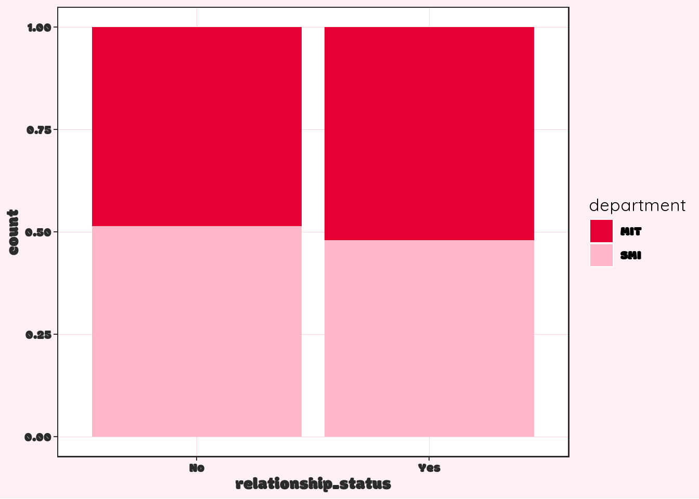
From the proportion bar graph we can see that both the departments are pretty fairly in the middle of both the yes and the no column. So we can conclude that it does not matter if you are in SMI or MIT, your odds of being in a relationship remain the same.
Hunch 3 - there are more introverts in SMI than in MIT.
This group had collected the personality types of people from both SMI and MIT. Each person is marked E (extrovert) or I (introvert) in the
data <- read_csv("data/introextro.csv")Rows: 60 Columns: 4
── Column specification ────────────────────────────────────────────────────────
Delimiter: ","
chr (3): department, mbti-type, social-orientation
dbl (1): sno
ℹ Use `spec()` to retrieve the full column specification for this data.
ℹ Specify the column types or set `show_col_types = FALSE` to quiet this message.glimpse(data)Rows: 60
Columns: 4
$ sno <dbl> 1, 2, 3, 4, 5, 6, 7, 8, 9, 10, 11, 12, 13, 14, 15…
$ department <chr> "SMI", "SMI", "SMI", "SMI", "SMI", "SMI", "SMI", …
$ `mbti-type` <chr> "ENTP", "INTJ", "INFP", "INTP", "INFP", "INFP", "…
$ `social-orientation` <chr> "E", "I", "I", "I", "I", "I", "I", "I", "I", "E",…skim(data)| Name | data |
| Number of rows | 60 |
| Number of columns | 4 |
| _______________________ | |
| Column type frequency: | |
| character | 3 |
| numeric | 1 |
| ________________________ | |
| Group variables | None |
Variable type: character
| skim_variable | n_missing | complete_rate | min | max | empty | n_unique | whitespace |
|---|---|---|---|---|---|---|---|
| department | 0 | 1 | 3 | 3 | 0 | 2 | 0 |
| mbti-type | 0 | 1 | 4 | 4 | 0 | 14 | 0 |
| social-orientation | 0 | 1 | 1 | 1 | 0 | 2 | 0 |
Variable type: numeric
| skim_variable | n_missing | complete_rate | mean | sd | p0 | p25 | p50 | p75 | p100 | hist |
|---|---|---|---|---|---|---|---|---|---|---|
| sno | 0 | 1 | 30.5 | 17.46 | 1 | 15.75 | 30.5 | 45.25 | 60 | ▇▇▇▇▇ |
We only need the department and social-orientation variables, and convert them into factors. The column names have dashes in them, so they need backticks.
dataM <- data %>%
mutate(department = as.factor(department),
mbti_type = as.factor(`mbti-type`),
social = as.factor(`social-orientation`))
glimpse(dataM)Rows: 60
Columns: 6
$ sno <dbl> 1, 2, 3, 4, 5, 6, 7, 8, 9, 10, 11, 12, 13, 14, 15…
$ department <fct> SMI, SMI, SMI, SMI, SMI, SMI, SMI, SMI, SMI, SMI,…
$ `mbti-type` <chr> "ENTP", "INTJ", "INFP", "INTP", "INFP", "INFP", "…
$ `social-orientation` <chr> "E", "I", "I", "I", "I", "I", "I", "I", "I", "E",…
$ mbti_type <fct> ENTP, INTJ, INFP, INTP, INFP, INFP, ISFP, INFJ, I…
$ social <fct> E, I, I, I, I, I, I, I, I, E, E, E, I, E, I, E, E…Now for graphs, I did two kinds of bar graphs and a mosaic graph. Then I did a chi-square test.
dataM |> gf_bar(~ department, fill = ~ social, position = "dodge")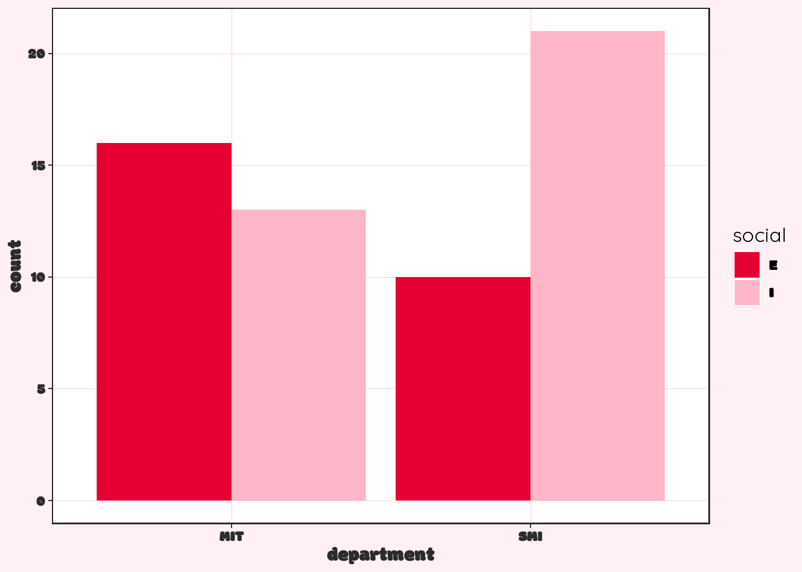
dataM |> gf_bar(~ department, fill = ~ social, position = "fill")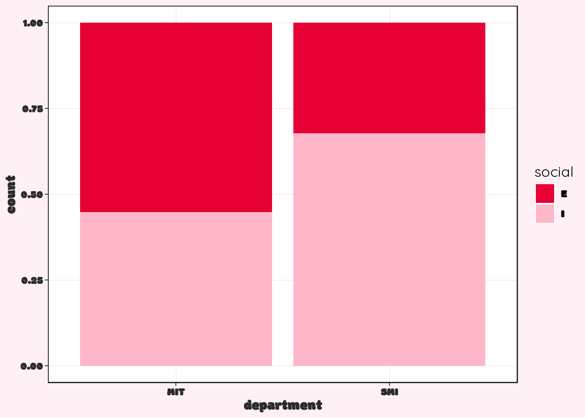
vcd::mosaic(~ department + social, data = dataM, shade = TRUE)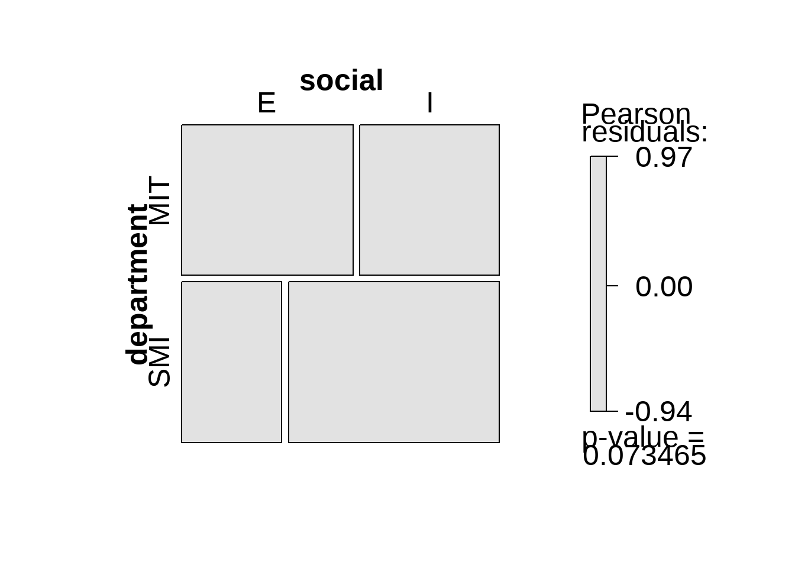
mosaic::xchisq.test(department ~ social, data = dataM)
Pearson's Chi-squared test with Yates' continuity correction
data: x
X-squared = 2.3386, df = 1, p-value = 0.1262
16 13
(12.57) (16.43)
[0.68] [0.52]
< 0.97> <-0.85>
10 21
(13.43) (17.57)
[0.64] [0.49]
<-0.94> < 0.82>
key:
observed
(expected)
[contribution to X-squared]
<Pearson residual>Limit: 60 students in total (31 SMI, 29 MIT). MBTI types are self-reported and often come from online quizzes. E/I is just one letter, so it doesn’t tell us how strongly someone leans either way.
IN THIS SAMPLE: From the bar graphs, MIT has slightly more extroverts than introverts (16 vs 13), while SMI has way more introverts than extroverts (21 vs 10). The difference between extroverts and introverts is small in MIT compared to the much larger difference in SMI.
The chi-square test suggests that there is not enough statistical evidence to conclude that SMI students are more introverted than MIT students, since the p value is 0.13.
Hunch 4 - Design students believe in AI more than art students.
This group collected and segregated the data based off whether the individual was enrolled in a design-centered program (CAC, IADP, BSSD) at SMI, vs an art-centered program (CAP, DM) - to see whether a certain group believes and trusts AI more than the other. There was another factor of gender in the data collected.
ai <- read_csv("data/ai_belief.csv")Rows: 60 Columns: 4
── Column specification ────────────────────────────────────────────────────────
Delimiter: ","
chr (3): gender, program, AI_belief
dbl (1): count
ℹ Use `spec()` to retrieve the full column specification for this data.
ℹ Specify the column types or set `show_col_types = FALSE` to quiet this message.glimpse(ai)Rows: 60
Columns: 4
$ count <dbl> 1, 2, 3, 4, 5, 6, 7, 8, 9, 10, 11, 12, 13, 14, 15, 16, 17, 1…
$ gender <chr> "boy", "girl", "boy", "girl", "boy", "girl", "boy", "girl", …
$ program <chr> "art", "art", "design", "design", "art", "art", "design", "d…
$ AI_belief <chr> "no", "no", "yes", "yes", "yes", "yes", "yes", "yes", "yes",…skim(ai)| Name | ai |
| Number of rows | 60 |
| Number of columns | 4 |
| _______________________ | |
| Column type frequency: | |
| character | 3 |
| numeric | 1 |
| ________________________ | |
| Group variables | None |
Variable type: character
| skim_variable | n_missing | complete_rate | min | max | empty | n_unique | whitespace |
|---|---|---|---|---|---|---|---|
| gender | 0 | 1 | 3 | 4 | 0 | 2 | 0 |
| program | 0 | 1 | 3 | 6 | 0 | 2 | 0 |
| AI_belief | 0 | 1 | 2 | 3 | 0 | 2 | 0 |
Variable type: numeric
| skim_variable | n_missing | complete_rate | mean | sd | p0 | p25 | p50 | p75 | p100 | hist |
|---|---|---|---|---|---|---|---|---|---|---|
| count | 0 | 1 | 30.5 | 17.46 | 1 | 15.75 | 30.5 | 45.25 | 60 | ▇▇▇▇▇ |
ai <- ai %>%
mutate(gender = as.factor(gender),
program = as.factor(program),
AI_belief = as.factor(AI_belief))
glimpse(ai)Rows: 60
Columns: 4
$ count <dbl> 1, 2, 3, 4, 5, 6, 7, 8, 9, 10, 11, 12, 13, 14, 15, 16, 17, 1…
$ gender <fct> boy, girl, boy, girl, boy, girl, boy, girl, boy, girl, boy, …
$ program <fct> art, art, design, design, art, art, design, design, art, art…
$ AI_belief <fct> no, no, yes, yes, yes, yes, yes, yes, yes, no, yes, no, no, …The first graph is a bar graph comparing art and design on the basis of a yes/no answer. Inference: design is about half yes (16 of 30), and art is a bit lower (12 of 30)
ai |> gf_bar(~ program, fill = ~ AI_belief, position = "fill")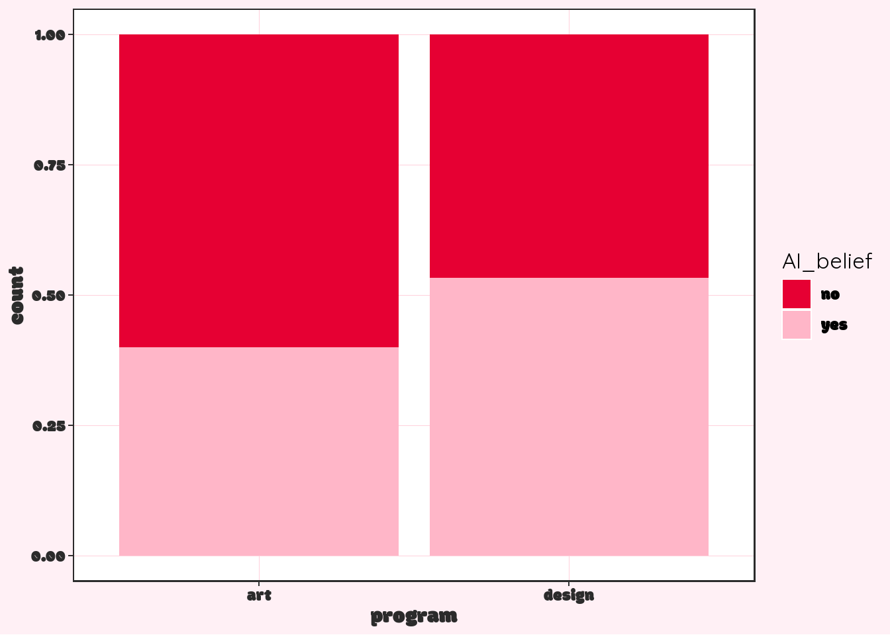
The second graph is similar to the first one, only that it compares genders on the basis of a yes/no answer. Inference: boys are mostly yes (19 of 30) and girls are mostly no (21 of 30)
ai |> gf_bar(~ gender, fill = ~ AI_belief, position = "fill")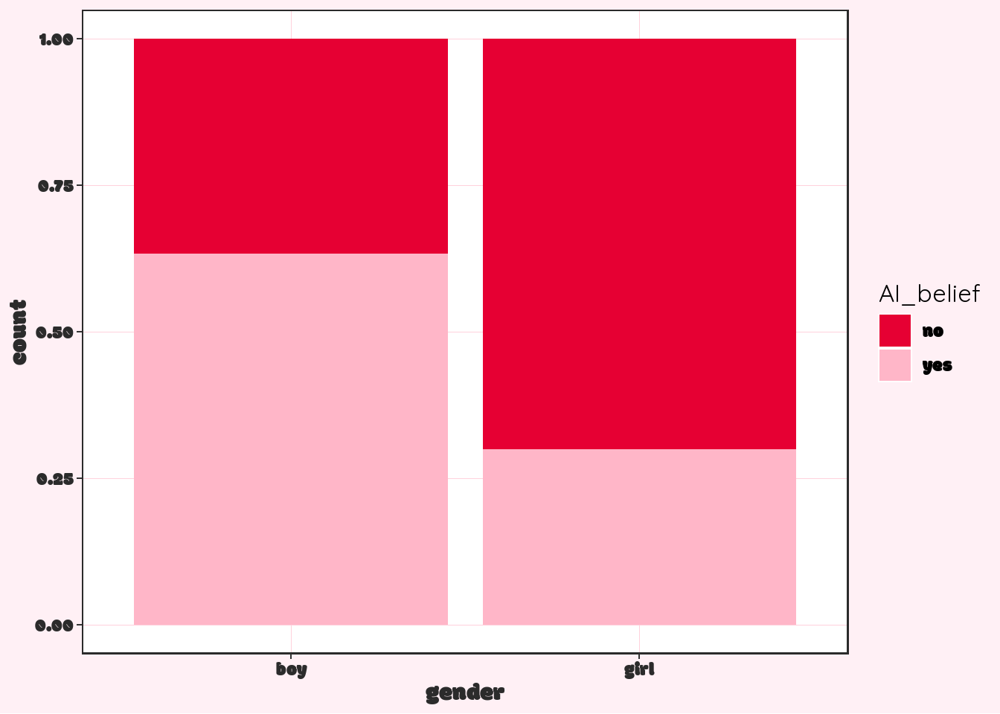
The mosaic charts will help in visualising the data with what should be the “ideal” data. Inference: the gender mosaic has a lopsided split, and the program one looks nearly even.
vcd::mosaic(~ program + AI_belief, data = ai, shade = TRUE)
vcd::mosaic(~ gender + AI_belief, data = ai, shade = TRUE)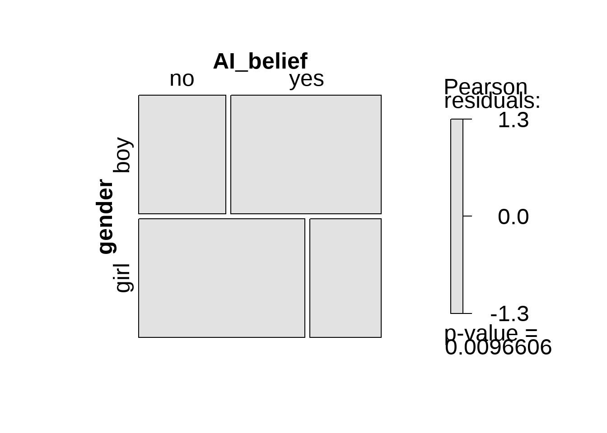
Looking at the p-values in the chi-sq tests: 1. Program - p ≈ 0.30, so not enough evidence. Art and design could easily look this different just by chance. 2. Gender - p ≈ 0.01, below 0.05, so the gap between boys and girls is unlikely to be chance in this sample.
mosaic::xchisq.test(AI_belief ~ program, data = ai)
Pearson's Chi-squared test with Yates' continuity correction
data: x
X-squared = 0.60268, df = 1, p-value = 0.4376
18 14
(16.00) (16.00)
[0.14] [0.14]
< 0.50> <-0.50>
12 16
(14.00) (14.00)
[0.16] [0.16]
<-0.53> < 0.53>
key:
observed
(expected)
[contribution to X-squared]
<Pearson residual>mosaic::xchisq.test(AI_belief ~ gender, data = ai)
Pearson's Chi-squared test with Yates' continuity correction
data: x
X-squared = 5.4241, df = 1, p-value = 0.01986
11 21
(16.00) (16.00)
[1.27] [1.27]
<-1.25> < 1.25>
19 9
(14.00) (14.00)
[1.45] [1.45]
< 1.34> <-1.34>
key:
observed
(expected)
[contribution to X-squared]
<Pearson residual>Limit: 60 students from only SMI, one college. Yes/no answer doesn’t tell us how strongly a person feels about AI. (Likert plots could’ve been used if the data was collected in that format)
IN THIS SAMPLE: From the bar graphs, design students say yes to AI a little more than art students (16 out of 30 vs 12 out of 30), but the gap is pretty small. But with gender: 19 out of 30 boys said yes, while only 9 out of 30 girls did.
The chi-square test for program gives a p value of 0.30, which is way above 0.05, so we can’t say design students believe in AI more than art students. Program doesn’t seem to matter.
The chi-square test for gender gives a p value of 0.01, which is below 0.05. So in this sample, boys are more likely to believe in AI than girls. We still can’t say why, and with only 60 students from one campus, we’d need a bigger group before saying this is true everywhere.
Hunch 5 - Some people think tattoos make people look more attractive, while others think the opposite.
This group asked students whether they think tattoos make people look more attractive (yes/no). They also recorded whether the person answering has tattoos themselves, to see if that changes their opinion. Gender was recorded too.
tattoo <- read_csv("data/tattoo.csv")Rows: 60 Columns: 4
── Column specification ────────────────────────────────────────────────────────
Delimiter: ","
chr (3): Gender, Has_tattoos?, Opinion
dbl (1): Respondents
ℹ Use `spec()` to retrieve the full column specification for this data.
ℹ Specify the column types or set `show_col_types = FALSE` to quiet this message.glimpse(tattoo)Rows: 60
Columns: 4
$ Respondents <dbl> 1, 2, 3, 4, 5, 6, 7, 8, 9, 10, 11, 12, 13, 14, 15, 16, …
$ Gender <chr> "M", "M", "M", "M", "M", "M", "M", "M", "M", "M", "M", …
$ `Has_tattoos?` <chr> "yes", "no", "yes", "no", "no", "yes", "no", "yes", "no…
$ Opinion <chr> "yes", "yes", "no", "yes", "no", "yes", "yes", "yes", "…skim(tattoo)| Name | tattoo |
| Number of rows | 60 |
| Number of columns | 4 |
| _______________________ | |
| Column type frequency: | |
| character | 3 |
| numeric | 1 |
| ________________________ | |
| Group variables | None |
Variable type: character
| skim_variable | n_missing | complete_rate | min | max | empty | n_unique | whitespace |
|---|---|---|---|---|---|---|---|
| Gender | 0 | 1 | 1 | 1 | 0 | 2 | 0 |
| Has_tattoos? | 0 | 1 | 2 | 3 | 0 | 2 | 0 |
| Opinion | 0 | 1 | 2 | 3 | 0 | 2 | 0 |
Variable type: numeric
| skim_variable | n_missing | complete_rate | mean | sd | p0 | p25 | p50 | p75 | p100 | hist |
|---|---|---|---|---|---|---|---|---|---|---|
| Respondents | 0 | 1 | 30.5 | 17.46 | 1 | 15.75 | 30.5 | 45.25 | 60 | ▇▇▇▇▇ |
tattoo <- tattoo %>%
mutate(Gender = as.factor(Gender),
`Has_tattoos?` = as.factor(`Has_tattoos?`),
Opinion = as.factor(Opinion))
glimpse(tattoo)Rows: 60
Columns: 4
$ Respondents <dbl> 1, 2, 3, 4, 5, 6, 7, 8, 9, 10, 11, 12, 13, 14, 15, 16, …
$ Gender <fct> M, M, M, M, M, M, M, M, M, M, M, M, M, M, M, M, M, M, M…
$ `Has_tattoos?` <fct> yes, no, yes, no, no, yes, no, yes, no, yes, no, yes, n…
$ Opinion <fct> yes, yes, no, yes, no, yes, yes, yes, no, yes, yes, no,…The first graph is a simple bar graph of everyone’s answer to the main question: are tattoos attractive? Inference: yes wins by a huge margin - 41 vs 19.
tattoo |> gf_bar(~ Opinion, fill = ~ Opinion)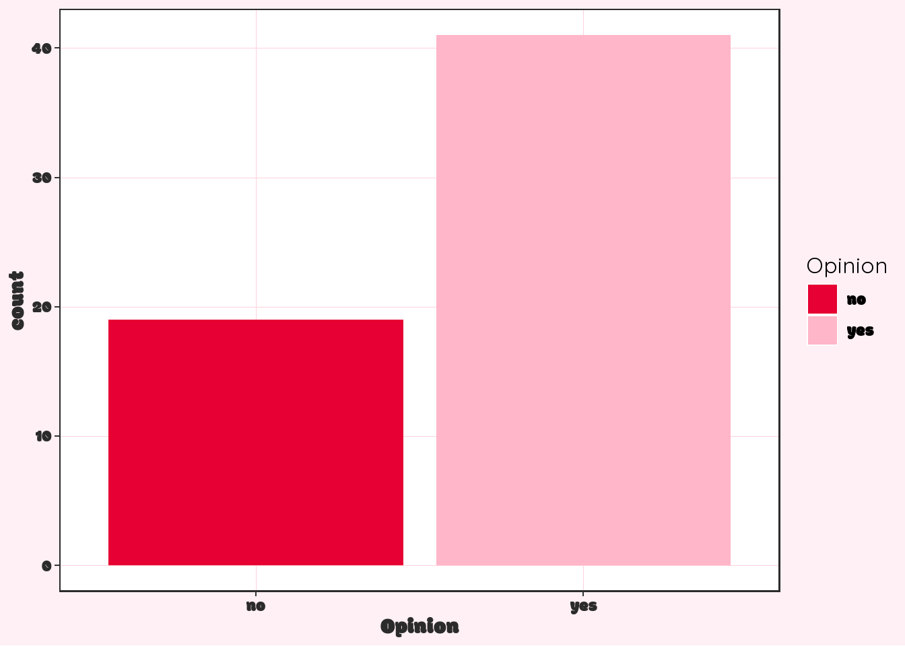
The second graph compares people with and without tattoos, as proportions. Inference: both groups look almost the same, about two-thirds yes (21 of 30 with tattoos, 20 of 30 without).
tattoo |> gf_bar(~ `Has_tattoos?`, fill = ~ Opinion, position = "fill")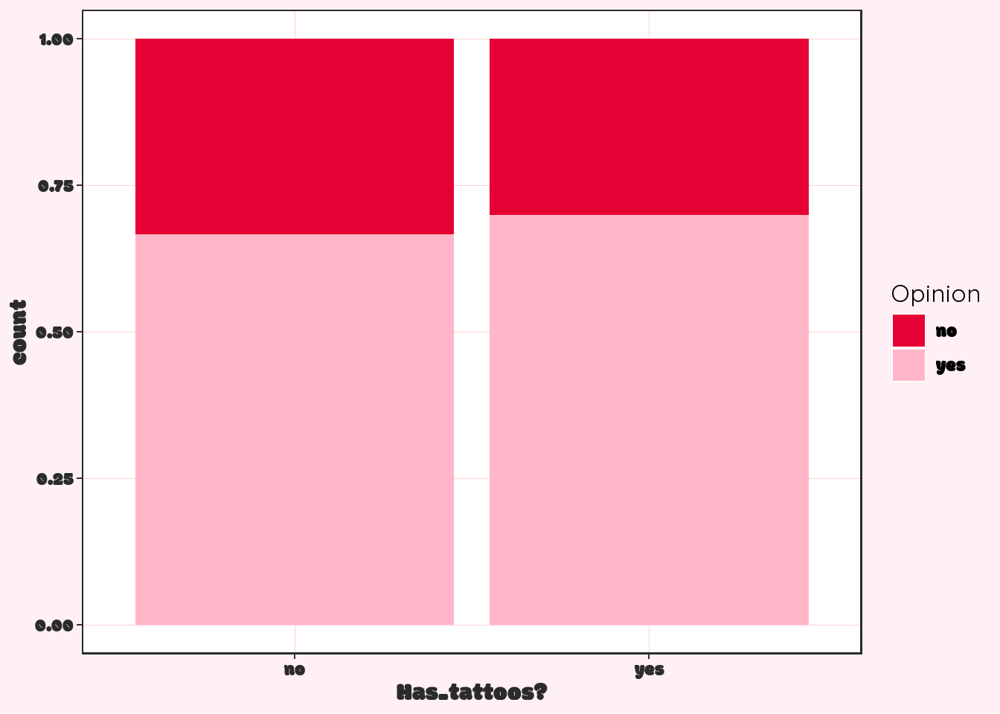
The third graph does the same for gender. Inference: almost no difference again (21 of 30 girls, 20 of 30 boys said yes).
tattoo |> gf_bar(~ Gender, fill = ~ Opinion, position = "fill")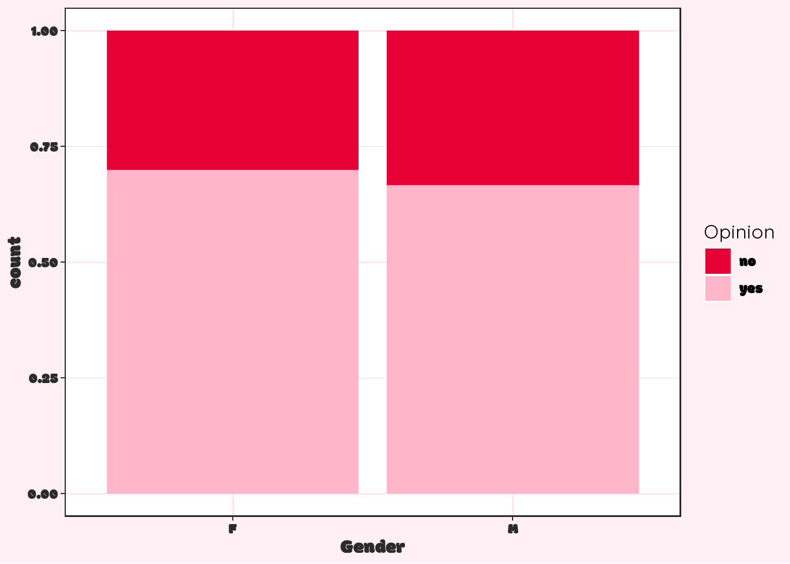
The mosaic chart compares the real split with what we’d expect if having tattoos made no difference. Inference: the boxes line up almost perfectly, nothing is shaded.
vcd::mosaic(~ `Has_tattoos?` + Opinion, data = tattoo, shade = TRUE)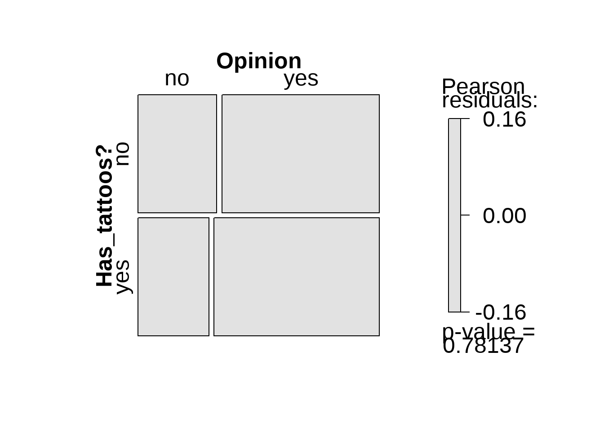
First, a binomial test to check if opinion is really split, or if one side wins. Then chi-square tests to see if having tattoos (or gender) changes the answer. 1. Binomial (everyone) - p ≈ 0.006, below 0.05, so opinion isn’t split down the middle: more people say yes. 2. Chi-square (has tattoos) - p ≈ 1, so having tattoos makes no difference to the answer. 3. Chi-square (gender) - p ≈ 1, no difference either.
mosaic::binom.test(~ Opinion, data = tattoo, success = "yes")
data: tattoo$Opinion [with success = yes]
number of successes = 41, number of trials = 60, p-value = 0.006218
alternative hypothesis: true probability of success is not equal to 0.5
95 percent confidence interval:
0.5504403 0.7974245
sample estimates:
probability of success
0.6833333 mosaic::xchisq.test(Opinion ~ `Has_tattoos?`, data = tattoo)
Pearson's Chi-squared test with Yates' continuity correction
data: x
X-squared = 0, df = 1, p-value = 1
10 9
( 9.50) ( 9.50)
[0.00] [0.00]
< 0.16> <-0.16>
20 21
(20.50) (20.50)
[0.00] [0.00]
<-0.11> < 0.11>
key:
observed
(expected)
[contribution to X-squared]
<Pearson residual>mosaic::xchisq.test(Opinion ~ Gender, data = tattoo)
Pearson's Chi-squared test with Yates' continuity correction
data: x
X-squared = 0, df = 1, p-value = 1
9 10
( 9.50) ( 9.50)
[0.00] [0.00]
<-0.16> < 0.16>
21 20
(20.50) (20.50)
[0.00] [0.00]
< 0.11> <-0.11>
key:
observed
(expected)
[contribution to X-squared]
<Pearson residual>Limit: 60 students from one campus. “Attractive” is a yes/no answer, so we don’t know how strongly people feel, or whether it depends on the tattoo (size, placement, style). “Has tattoos” is also just yes/no, with no info on how many.
IN THIS SAMPLE: From the bar graphs, most people think tattoos make people look more attractive: 41 out of 60 said yes (about 68%). So it’s not really a half-and-half debate; yes clearly wins.
The binomial test gives a p value of 0.006, which is below 0.05, so the yes side winning is unlikely to be chance.
Having tattoos yourself doesn’t seem to matter at all: about two-thirds of both groups said yes, and the chi-square p value is about 1. Same with gender. So in this sample, whether or not you have tattoos, you’re just as likely to find them attractive.
Hunch 6 - Friends vs Modern Family vs House
This group asked students to rate three TV shows (Friends, House and Modern Family) out of 10. Not everyone has watched every show, so some ratings are missing.
The scores were typed in as “7/10”, “8/10” and so on, which Excel saved as dates (7th October, 8th October…). So we read the columns as dates and take the DAY of each date, which gives us back the score.
library(readxl)
library(janitor)
hunch1 <- readxl::read_excel("data/tv_shows.xlsx",
col_types = c("numeric", "date", "date", "date"),
na = c("N/A", "`")) |>
janitor::clean_names()
glimpse(hunch1)Rows: 69
Columns: 4
$ students <dbl> 1, 2, 3, 4, 5, 6, 7, 8, 9, 10, 11, 12, 13, 14, 15, 16, 1…
$ friends <dttm> 2026-10-07, 2026-10-07, 2026-10-07, NA, 2026-10-10, 202…
$ house <dttm> NA, NA, NA, NA, NA, NA, NA, NA, 2026-10-06, 2026-10-08,…
$ modern_family <dttm> 2026-10-09, NA, 2026-10-08, 2026-10-06, 2026-10-07, 202…clean_names() makes the column names lowercase with underscores, so “Modern Family” becomes
Next, we take the day from each date to get the score, then pivot longer so that all the shows are in one column,
hunch1_mod <- hunch1 |>
mutate(friends = lubridate::day(friends) |> as.numeric(),
house = lubridate::day(house) |> as.numeric(),
modern_family = lubridate::day(modern_family) |> as.numeric()) |>
pivot_longer(c(-students), names_to = "show", values_to = "scores") |>
filter(!is.na(scores)) |>
mutate(show = as.factor(show))
glimpse(hunch1_mod)Rows: 139
Columns: 3
$ students <dbl> 1, 1, 2, 3, 3, 4, 5, 5, 6, 6, 7, 9, 9, 9, 10, 10, 11, 11, 11,…
$ show <fct> friends, modern_family, friends, friends, modern_family, mode…
$ scores <dbl> 7, 9, 7, 7, 8, 6, 10, 7, 10, 6, 8, 7, 6, 8, 8, 9, 8, 6, 9, 7,…Not everyone has watched every show (hi, it’s me), so filter(!is.na(scores)) kicks out the empty ratings and keeps only the ones people actually gave.
The first graph is a boxplot of scores for each show. Inference: Modern Family sits highest (median 8), Friends is in the middle, and House is lowest, with the widest spread.
hunch1_mod |> gf_boxplot(scores ~ show, fill = ~ show)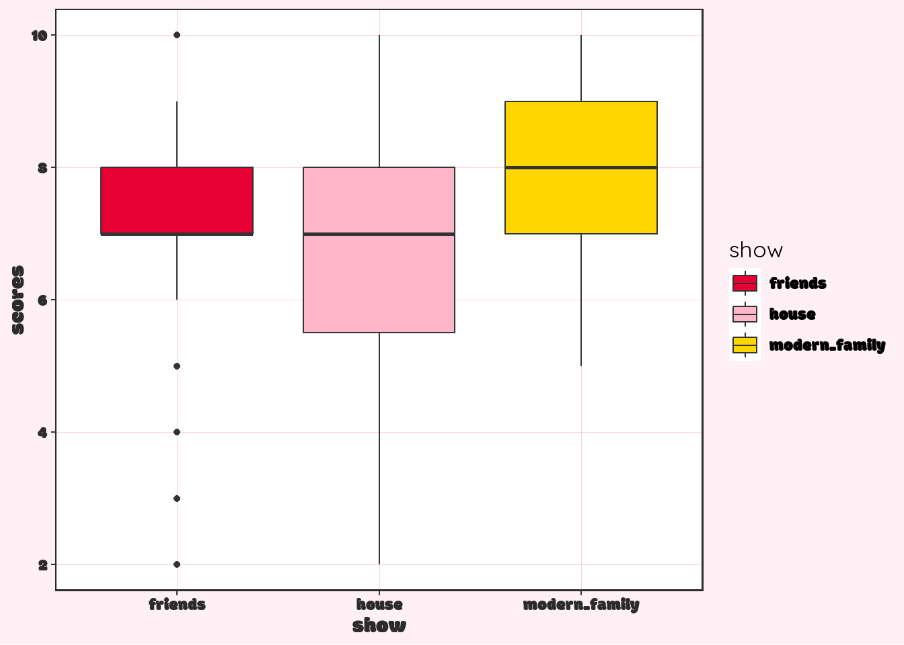
The second graph is a histogram of scores, one panel per show. Inference: Modern Family’s scores pile up at 8 to 10, while House’s are spread all over (from 2 to 10).
hunch1_mod |>
gf_histogram(~ scores, fill = ~ show, binwidth = 1) |>
gf_facet_wrap(~ show, ncol = 1)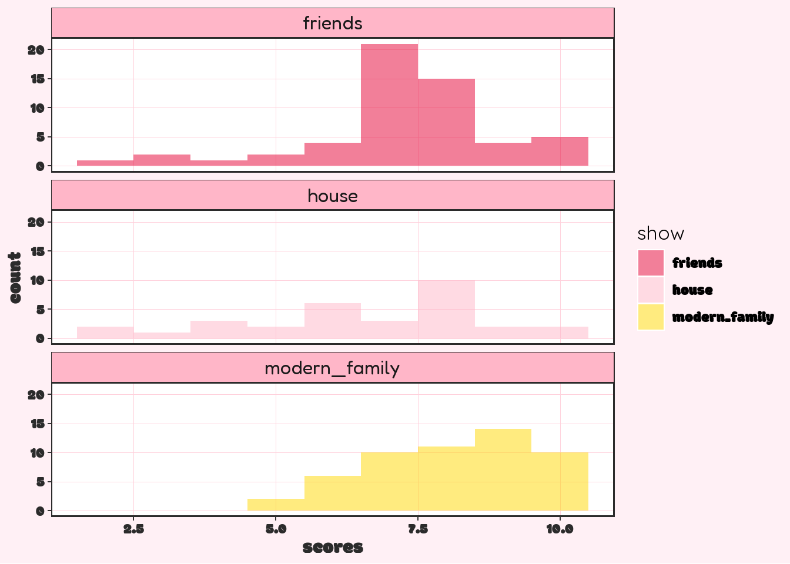
The scores are numbers and the shows are groups, so we can use an ANOVA. supernova() tells us whether the show makes a difference to the score, and pairwise() compares each pair of shows. 1. ANOVA - F ≈ 8.4, p ≈ 0.0004, PRE ≈ 0.11. The show explains about 11% of the variation in scores, and the difference is very unlikely to be chance. 2. Pairwise - Modern Family beats House (p < 0.001) and Friends (p ≈ 0.03), but Friends and House can’t be separated (p ≈ 0.19).
favstats(scores ~ show, data = hunch1_mod) show min Q1 median Q3 max mean sd n missing
1 friends 2 7.0 7 8 10 7.254545 1.669089 55 0
2 house 2 5.5 7 8 10 6.580645 2.141249 31 0
3 modern_family 5 7.0 8 9 10 8.113208 1.423165 53 0aov(formula = scores ~ show, data = hunch1_mod) |> supernova::supernova() Analysis of Variance Table (Type III SS)
Model: scores ~ show
SS df MS F PRE p
----- --------------- | ------- --- ------ ----- ----- -----
Model (error reduced) | 48.795 2 24.398 8.436 .1104 .0004
Error (from model) | 393.306 136 2.892
----- --------------- | ------- --- ------ ----- ----- -----
Total (empty model) | 442.101 138 3.204 aov(formula = scores ~ show, data = hunch1_mod) |> supernova::pairwise(plot = TRUE)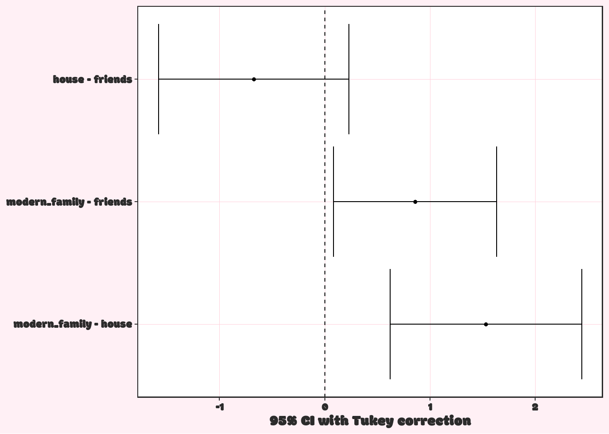
── Tukey's Honestly Significant Differences ────────────────────────────────────Model: scores ~ showshowLevels: 3Family-wise error-rate: 0.05
group_1 group_2 diff pooled_se q df lower upper p_adj
<chr> <chr> <dbl> <dbl> <dbl> <int> <dbl> <dbl> <dbl>
1 house friends -0.674 0.270 -2.495 136 -1.579 0.231 .1855
2 modern_family friends 0.859 0.231 3.710 136 0.083 1.634 .0261
3 modern_family house 1.533 0.272 5.637 136 0.621 2.444 .0003Limit: the same students rated more than one show, so the scores aren’t fully independent (a normal ANOVA assumes they are). Far fewer people rated House (31, vs 50+ for the others), probably because fewer people have watched it. Also, a score out of 10 depends on the person: one person’s 7 might be another person’s 9.
IN THIS SAMPLE: Modern Family is the favourite, with an average of about 8.1 out of 10, compared with 7.3 for Friends and 6.6 for House.
The ANOVA gives a p value of 0.0004, which is way below 0.05, so the show really does make a difference to the score. The pairwise test shows that Modern Family is rated higher than both House and Friends, but the gap between Friends and House is too small to call.
Conclusion
- The spine, after five panels: Bodies carry risk differently depending on who you are (A). Class shows up in where people live and how much they smoke, more than in heart disease itself (B). Money and long lives tend to go together around the world (C). And in Hinkley, where you lived decided what you drank (D). Then in Panel E we left the textbook datasets and went and asked our own campus, and found out most of our hunches were wrong, which is kind of the point. Oh, and smoking? It refused to behave the way we expected, every single time.
- What we’d defend in ninety seconds:
- A: Why do male smokers here look healthier on cholesterol? We still don’t fully know, but it isn’t just the alcohol.
- B: Does smoking lower your risk of CVD? Nope. Ex-smokers have the most CVD, but they’re also the oldest.
- C: Do richer countries live longer? Mostly, yes (r = 0.68).
- D: Did living inside the plume change what happened to you? In our map, yes (but our map is made up).
- E: Did any of our campus hunches hold up? A few. Boys and girls get the same allowance (p = 0.49), SMI and MIT are about as likely to be in relationships, and SMI leans introvert but not enough to prove it (p = 0.13). The surprises: gender, not program, split people on AI (p = 0.01), most people find tattoos attractive whether or not they have any (p = 0.006), and Modern Family beats both Friends and House (p = 0.0004).
- What we won’t claim: that smoking is good for you (please don’t), that class or money causes anything, that our Hinkley map is real, or that what 60 people on one campus said is true for everyone.
- Human vs machine:
- Human: the questions and predictions in all panels, the first HDL/LDL histograms, the sys/dia scatter,
facet_wrap()by sex, the “how many cigarettes” limit, the helper columns and cut-offs, the violins andtally()counts, the cholesterol t-test from class, thecarstairhistogram and thesmoke × cvdmosaics, Panel C’s scatter, population chart and maps (and the notes on what they show), drawing the plume and placing the houses in Google Maps for Panel D, picking the families and their Qual variables, Panel D’s See / Ask / Mark / Predict / Say / Limit, all the Panel E hunches and collecting the data across campus (armed with Blinkit treats), and the code and write-ups - Machine (AI-assisted): the
pivot_longer()chart, formatting and merging our drafts into the template, formatting Panel B, the deprivation groups (cut_number()), the age check for ex-smokers, checking numbers across the panels, the font and theme setup, tidying Panel C (the USA name fix, the unmatched-countries list, chart titles) - Faculty: the trick of reading the TV scores as dates and taking the day.
- Human: the questions and predictions in all panels, the first HDL/LDL histograms, the sys/dia scatter,
- Limits: every panel is one snapshot in time. Smoking is just yes / no in A, and loose groups in B. Some groups are tiny (36 female smokers in A, 5 made-up families in D). Age is tangled up with smoking in B.
carstairis about the area, not the person. Some countries are blank on the Panel C maps. Panel D is hypothetical from start to finish. And Panel E is around 60 students from one campus per hunch, mostly answering yes or no, which hides how strongly anyone feels about anything (Likert plot we need you). - Gift for the steal-this strip: helper columns with the cut-offs said out loud (like
high_bp = sys >= 140), building your own tibble withtribble()and dropping it straight onto a leaflet map, and, if your scores ever turn into dates,lubridate::day()to get them back.